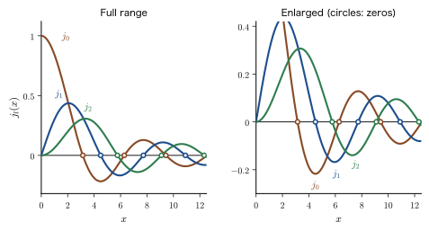
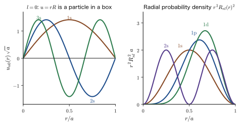
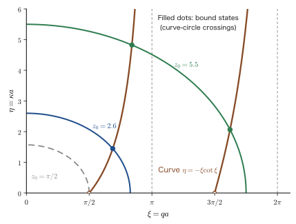
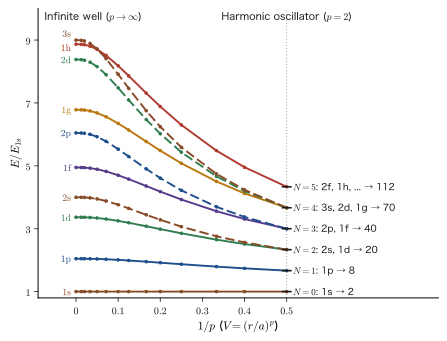

Chapter 14The Schrödinger Equation in Three Dimensions — Separation of Variables and the Spherical Well
Electrons in atoms, electrons in semiconductor microcrystals (quantum dots), electrons in tiny grains of metal (clusters), and protons and neutrons in atomic nuclei: what these have in common is that the particle is confined to a region in the shape of a sphere. In the preceding chapters we solved the Schrödinger equation on the assumption that the particle moves only along a single straight line (the $x$ axis), but real matter is three-dimensional, and atoms, nuclei, and nanoparticles are all close to spherical. In this chapter we extend the way of thinking that we acquired in one dimension to three dimensions, and we solve the problem of a particle confined in a spherical box—the spherically symmetric infinite well—to the very end, without skipping a single line.
In classical mechanics, a particle that repeatedly collides with the wall inside a spherical container changes its direction each time it is reflected from the wall. However, the force that the wall exerts on the particle is perpendicular to the wall and points in the radial direction (the direction toward the center O), so the angular momentum $\bm{L}=\bm{r}\times\bm{p}$ about O does not change (central force; AD 03, Chapter 8, Section 8.1). The kinetic energy can therefore be thought of as divided into two parts: “radial motion” and “rotation about O (the centrifugal force).” In quantum mechanics, too, this decomposition survives. If we write the wave function in the product form $\psi=R(r)\,\Theta(\theta)\,\Phi(\varphi)$ and separate the variables, the Schrödinger equation splits into three ordinary differential equations. The two equations for the angles are the same for any form of the potential, as long as the potential is a function of $r$ only (exactly the same even for the hydrogen atom), and the potential enters only the radial equation. The radial equation contains the centrifugal term $\hbar^2l(l+1)/(2m_{\mathrm e}r^2)$. Whereas in classical mechanics the magnitude of $\bm{L}$ could take continuous values, in quantum mechanics only the discrete values fixed by an integer $l=0,1,2,\ldots$ are allowed. This is the decisive difference from classical physics.
Another aim of this chapter is to assemble the tools that we will use again and again in the chapters ahead. The spherical harmonics $Y_l^m(\theta,\varphi)$ appear as the solutions of the angular equation. This book defines them here for the first time, and it also fixes here the convention for the choice of phase (the Condon–Shortley convention; Section 14.5.4). The spherical Bessel functions $j_l(x)$ appear as the solutions of the radial equation. A Bessel function of half-integer order is in fact an elementary function that can be written with $\sin$ and $\cos$, so there is no need to be afraid of it. The levels $E_{ln}=\hbar^2z_{ln}^2/(2m_{\mathrm e}a^2)$ of the spherically symmetric infinite well obtained in this way ($z_{ln}$ is a zero of $j_l$) are the starting point for explaining the size dependence of the emission color of semiconductor quantum dots and the “magic numbers” of metal clusters. In the next chapter, Chapter 15, we apply the same separation of variables to the potential of the hydrogen atom. We will learn in Part IV (starting with Chapter 21), as operator algebra, that $l$ and $m$ are “the magnitude and the $z$ component of the angular momentum.”
- Solve the three-dimensional Schrödinger equation in a rectangular box by separation of variables, and explain that the degeneracy in a cube reflects symmetry
- Spherical coordinates $(r,\theta,\varphi)$, the volume element $r^2\sin\theta\,\dd r\,\dd\theta\,\dd\varphi$, and the meaning of the three terms of the Laplacian $\nabla^2$
- Substitute $\psi=R\Theta\Phi$, introduce the separation constants $l(l+1)$ and $m^2$, and derive the three equations: the radial equation, the polar-angle equation, and the azimuthal-angle equation; understand that the angular part is shared with the hydrogen atom
- Convert the radial equation into Bessel's equation by $R=X/\sqrt{r}$, find the series solution $J_{l+1/2}$ and the spherical Bessel function $j_l$, and understand the one-dimensional view through $u=rR$ and the centrifugal potential
- Define the spherical harmonics $Y_l^m$ from the solution $\Theta(\theta)$ of the angular equation (the associated Legendre function) and $\Phi(\varphi)=C_0e^{im\varphi}$, and determine the normalization constant
- From the boundary condition $j_l(ka)=0$, find the levels $E_{ln}=\hbar^2z_{ln}^2/(2m_{\mathrm e}a^2)$ and the wave functions $\psi_{nlm}$, and explain the ordering of the levels and the degeneracy $2l+1$
- Estimate the emission color of quantum dots (the Brus formula), the magic numbers of metal clusters, the condition $V_0a^2\gt\pi^2\hbar^2/(8m_{\mathrm e})$ under which a bound state of the finite spherical well appears, and the levels $(N+\tfrac32)\hbar\omega$ of the three-dimensional harmonic oscillator
Source notes: Yasuhide Mochizuki, “Physics Notes: Quantum Mechanics 2,” pp. 39–40.
14.1 The Three-Dimensional Schrödinger Equation and the Rectangular Box — Degeneracy and “Why Spherical Coordinates?”
14.1.1 From one dimension to three dimensions
In the preceding chapters we solved problems in which a particle moves only along the $x$ axis. In three dimensions the position becomes $\bm{r}=(x,y,z)$, and the wave function becomes a function of three variables, $\psi(\bm{r})=\psi(x,y,z)$. The momentum operator is $\hat{\bm{p}}=-i\hbar\nabla=-i\hbar\left(\dfrac{\partial}{\partial x},\dfrac{\partial}{\partial y},\dfrac{\partial}{\partial z}\right)$, and the kinetic energy is $\hat{\bm{p}}\cdot\hat{\bm{p}}/(2m_{\mathrm e})$, that is, $\hat{p}_x^2+\hat{p}_y^2+\hat{p}_z^2=-\hbar^2\left(\dfrac{\partial^2}{\partial x^2}+\dfrac{\partial^2}{\partial y^2}+\dfrac{\partial^2}{\partial z^2}\right)$ divided by $2m_{\mathrm e}$ (Chapter 9, Section 9.2). If we write the expression in parentheses as the Laplacian $\nabla^2$, the time-independent Schrödinger equation becomes the following.
\begin{equation} -\frac{\hbar^2}{2m_{\mathrm e}}\nabla^2\psi(\bm{r})+V(\bm{r})\,\psi(\bm{r})=E\,\psi(\bm{r}),\qquad \nabla^2=\frac{\partial^2}{\partial x^2}+\frac{\partial^2}{\partial y^2}+\frac{\partial^2}{\partial z^2} \label{eq:14-tise3d} \end{equation}Here $V(\bm{r})$ is the potential energy, and $E$ is the total energy (eigenvalue) that we want to find. The Born interpretation also extends to three dimensions in the same form as in one dimension: $\abs{\psi(\bm{r})}^2\dd V$ is the probability of finding the particle in a small volume $\dd V$ around the position $\bm{r}$, and since the probability that the particle is somewhere in space is 1, the normalization condition is $\displaystyle\int\abs{\psi}^2\dd V=1$.
Notation: In this chapter the mass of the particle is written $m_{\mathrm e}$
In this chapter we write the mass of the particle as $m_{\mathrm e}$ (even when the particle is not an electron). This notation avoids confusion with the magnetic quantum number $m$ (Section 14.3). The same equations can be used as they are if we substitute the effective mass $m_{\mathrm e}^*$ (Chapter 11) for an electron in a semiconductor, and the reduced mass for a proton and a neutron in an atomic nucleus. In the quantum dot of Section 14.7.1, however, $m_{\mathrm e}$ denotes the mass of an electron in vacuum, and the effective masses of the electron and the hole in the crystal are written $m_{\mathrm e}^*$ and $m_{\mathrm h}^*$ (the subscript e means “electron”). The wavenumber is written $k=\sqrt{2m_{\mathrm e}E}/\hbar$, as in the preceding chapters.
In a region where the potential is 0 (the inside of the well), Eq. \eqref{eq:14-tise3d} becomes
\begin{equation} -\frac{\hbar^2}{2m_{\mathrm e}}\nabla^2\psi=E\psi \qquad\text{that is}\qquad \nabla^2\psi+k^2\psi=0\quad\left(k^2=\frac{2m_{\mathrm e}E}{\hbar^2}\right) \label{eq:14-helm} \end{equation}The equation on the left is just the one-dimensional $-\dfrac{\hbar^2}{2m}\psi''=E\psi$ (Chapter 10, Section 10.1) with $\psi''$ replaced by $\nabla^2\psi$. The equation on the right is called the Helmholtz equation, and it has the same form as the equation for sound waves resonating in a container. The aim of this chapter is to solve this equation to match the shape of the potential wall. First, let us review the case where the wall is a rectangular box.
14.1.2 The rectangular box — products of one-dimensional solutions
Suppose that $V=0$ inside a rectangular box with side lengths $L_x,L_y,L_z$, that is, for $0\le x\le L_x$, $0\le y\le L_y$, $0\le z\le L_z$, and that $V=\infty$ outside (the sides $L_1,L_2,L_3$ and the quantum numbers $(n_1,n_2,n_3)$ of the three-dimensional box in Chapter 10 are written here as $L_x,L_y,L_z$ and $(n_x,n_y,n_z)$, which make clear which axis each belongs to). Outside the wall $\psi=0$, and by the continuity of the wave function, $\psi=0$ on the faces of the wall as well (Chapter 10, Section 10.1.2). Inside the box we apply separation of variables to Eq. \eqref{eq:14-helm}. That is, we try assuming that the solution has the form of a product of functions of a single variable each, $\psi(x,y,z)=X(x)\,Y(y)\,Z(z)$.
Derivation: Separation of variables for the rectangular box
Substitute $\psi=XYZ$ into $-\dfrac{\hbar^2}{2m_{\mathrm e}}\nabla^2\psi=E\psi$. Since $\dfrac{\partial^2\psi}{\partial x^2}=X''YZ$ and so on ($Y,Z$ are constants with respect to $x$), we have
$$ -\frac{\hbar^2}{2m_{\mathrm e}}\left(X''YZ+XY''Z+XYZ''\right)=E\,XYZ $$Dividing both sides by $XYZ$, we obtain
$$ -\frac{\hbar^2}{2m_{\mathrm e}}\left(\frac{X''}{X}+\frac{Y''}{Y}+\frac{Z''}{Z}\right)=E $$The three terms on the left-hand side are functions of $x$ only, $y$ only, and $z$ only, respectively. For the sum to stay equal to the constant $E$ no matter how the three independent variables $x,y,z$ are varied, each term must be a constant (for example, if we hold $y,z$ fixed and vary only $x$, the second and third terms do not change, so the first term cannot change either). We therefore set
$$ -\frac{\hbar^2}{2m_{\mathrm e}}\frac{X''}{X}=E_x,\qquad -\frac{\hbar^2}{2m_{\mathrm e}}\frac{Y''}{Y}=E_y,\qquad -\frac{\hbar^2}{2m_{\mathrm e}}\frac{Z''}{Z}=E_z,\qquad E=E_x+E_y+E_z $$Each of these is exactly the equation of a particle in a one-dimensional box whose wave function vanishes at the walls, $-\dfrac{\hbar^2}{2m_{\mathrm e}}X''=E_xX$, $X(0)=X(L_x)=0$, so by Theorem 10.2 of Chapter 10 the solution is $X=\sqrt{2/L_x}\,\sin\dfrac{n_x\pi x}{L_x}$, $E_x=\dfrac{n_x^2\pi^2\hbar^2}{2m_{\mathrm e}L_x^2}$ ($n_x=1,2,\dots$). The same holds for $Y,Z$.
∎
Theorem 14.1: Particle in a rectangular box
The eigenfunctions and energies of a particle of mass $m_{\mathrm e}$ in a rectangular box of volume $V=L_xL_yL_z$ are given by the following, where $n_x,n_y,n_z=1,2,3,\dots$ are the quantum numbers:
\begin{equation} \psi_{n_xn_yn_z}=\sqrt{\frac{8}{V}}\sin\frac{n_x\pi x}{L_x}\sin\frac{n_y\pi y}{L_y}\sin\frac{n_z\pi z}{L_z},\qquad E=\frac{\pi^2\hbar^2}{2m_{\mathrm e}}\left(\frac{n_x^2}{L_x^2}+\frac{n_y^2}{L_y^2}+\frac{n_z^2}{L_z^2}\right)=\frac{h^2}{8m_{\mathrm e}}\left(\frac{n_x^2}{L_x^2}+\frac{n_y^2}{L_y^2}+\frac{n_z^2}{L_z^2}\right) \label{eq:14-box3d} \end{equation}The normalization constant $\sqrt{8/V}$ is the product of the three one-dimensional normalization constants $\sqrt{2/L_x}\sqrt{2/L_y}\sqrt{2/L_z}$.
One dimension → two dimensions (Chapter 10, Section 10.3) → three dimensions: each time we add a dimension, one more quantum number appears, and the energy becomes “the sum of the energies in the individual directions.” This is the general consequence of separation of variables when the potential can be written in the form $V=V_x(x)+V_y(y)+V_z(z)$.
14.1.3 Degeneracy of the cube — symmetry creates degeneracy
For a cube, $L_x=L_y=L_z=L$, taking the one-dimensional ground-state energy $E_1=\dfrac{h^2}{8m_{\mathrm e}L^2}=\dfrac{\pi^2\hbar^2}{2m_{\mathrm e}L^2}$ as the unit, we have $E=(n_x^2+n_y^2+n_z^2)\,E_1$. For example, $(n_x,n_y,n_z)=(2,1,1)$, $(1,2,1)$, and $(1,1,2)$ all have $E=6E_1$: their wave functions differ from one another, yet their energies are equal. The number of linearly independent eigenstates with the same energy is called the degeneracy. The level with $n_x^2+n_y^2+n_z^2=6$ is threefold degenerate, and the level with $14=1^2+2^2+3^2$ is sixfold degenerate because of the six permutations of $(1,2,3)$ (Table 10.3 of Chapter 10).
This degeneracy reflects the fact that the three axes $x,y,z$ of the cube are equivalent (the box looks the same even if the axes are interchanged). In addition to this degeneracy due to symmetry, there is also accidental degeneracy, which arises from coincidences among numbers. For example, since $27=3^2+3^2+3^2=5^2+1^2+1^2$, the four states made up of $(3,3,3)$ together with $(5,1,1)$ and its permutations (three arrangements) have the same energy. Since $(3,3,3)$ returns to itself when the axes are interchanged, it is not connected by symmetry to the partners of $(5,1,1)$.
If symmetry is the cause of the degeneracy, then breaking the symmetry slightly should lift the degeneracy. Let us check this in the next example. It is also the same principle by which the electrons around an atom in a solid have their levels split by the crystal field (ligand field, Chapter 44). How a perturbation lifts a degeneracy is studied systematically in Part V (Chapter 28).
Example 14.1: Stretching the cube in one direction lifts the degeneracy
Among the levels of an electron in a cubic box of side $L=1\ \mathrm{nm}$, focus on $E=3E_1$ ($(1,1,1)$) and $E=6E_1$ (threefold degenerate). If the box is stretched by a factor of 1.2 in the $z$ direction only, so that $L_x=L_y=L$ and $L_z=1.2L$, what happens to these levels? Using $E_1=h^2/(8m_{\mathrm e}L^2)=0.3760\ \mathrm{eV}$, find the values of the energies.
Solution. Setting $L_x=L_y=L$ and $L_z=1.2L$ in Eq. \eqref{eq:14-box3d}, we have
$$ E=E_1\left(n_x^2+n_y^2+\frac{n_z^2}{1.2^2}\right)=E_1\left(n_x^2+n_y^2+\frac{n_z^2}{1.44}\right) $$For $(1,1,1)$, $E=E_1\left(2+\dfrac{1}{1.44}\right)=2.694\,E_1=1.013\ \mathrm{eV}$ (lower than the cube's $3E_1=1.128\ \mathrm{eV}$; because the box has become wider, the confinement has become weaker).
The $E=6E_1$ level, which was threefold degenerate in the cube, splits into the following two:
- $(1,1,2)$: $E=E_1\left(2+\dfrac{4}{1.44}\right)=4.778\,E_1=1.796\ \mathrm{eV}$ (nondegenerate)
- $(2,1,1)$, $(1,2,1)$: $E=E_1\left(5+\dfrac{1}{1.44}\right)=5.694\,E_1=2.141\ \mathrm{eV}$ (twofold degenerate)
Since the symmetry under the interchange of $x$ and $y$ remains, $(2,1,1)$ and $(1,2,1)$ remain degenerate. On the other hand, since only the $z$ direction has become special, $(1,1,2)$ has a different energy. The size of the splitting is $(5.694-4.778)E_1=0.917\,E_1=0.345\ \mathrm{eV}$, which is not negligible even compared with the level spacing before the stretching.
The results are summarized in Figure 14.1. The upper levels $E=9E_1$ and $11E_1$ likewise split into a twofold level and a nondegenerate level. A “threefold” level splits into “twofold + nondegenerate” because the equivalence of the three axes of the cube has been lowered to a symmetry in which the $z$ axis alone is treated differently (only the interchange $x\leftrightarrow y$ remains).
14.1.4 Counting the states
When the box is large, the levels are packed very densely. What matters then is not the individual levels but “how many states lie at or below the energy $E$.” In a three-dimensional box, if we let $k_x=n_x\pi/L_x$ and so on, the states correspond one to one to the lattice sites of $(k_x,k_y,k_z)$ space (with spacings $\pi/L_x,\pi/L_y,\pi/L_z$). The states with energy at most $E$ lie inside the sphere $k\le\sqrt{2m_{\mathrm e}E}/\hbar$, and within the one-eighth of it with $k_x,k_y,k_z\gt0$ the lattice sites are arranged with one state per site, so we have
$$ N(E)=\frac{1}{8}\cdot\frac{4\pi k^3/3}{\pi^3/(L_xL_yL_z)}=\frac{V\,k^3}{6\pi^2}=\frac{V\,(2m_{\mathrm e}E)^{3/2}}{6\pi^2\hbar^3} $$(the spin degree of freedom is not included). The density of states is $g(E)=\dd N/\dd E=\dfrac{V(2m_{\mathrm e})^{3/2}}{4\pi^2\hbar^3}\sqrt{E}$. When the box is large (when $E$ is sufficiently large), this leading term does not depend on the shape of the box and is determined by the volume $V$ alone (the shape-dependent corrections, which appear as terms proportional to the surface area and so on, are smaller than this; for details, see Chapter 10, Section 10.7, AD 03, Chapter 52, Section 52.8 (in Japanese), and Solid-State Physics (AD 06, Contents (in Japanese))).
14.1.5 Why do we need spherical coordinates?
A rectangular box has walls, the planes $x=0,L_x$, $y=0,L_y$, $z=0,L_z$, that are parallel to the coordinate axes, so separation of variables was easy. A spherical wall $\sqrt{x^2+y^2+z^2}=a$, however, contains all three of $x,y,z$. For example, when the value of $z$ is held fixed, the allowed range of $x$ changes depending on $y$ and $z$, so the boundary condition does not split into conditions on “$X$ only,” “$Y$ only,” and “$Z$ only.” In Cartesian coordinates, a solution in product form cannot represent a spherical wall.
So we choose the coordinates anew so that the wall becomes one of the coordinate surfaces. A spherical wall is a surface on which the distance $r$ from the origin is constant ($r=a$). If we use spherical coordinates, which take the distance $r$ from the origin and two angles $(\theta,\varphi)$ as coordinates, the position of the wall is expressed by the single condition $r=a$. When we separate variables in spherical coordinates, the boundary condition is imposed only on the radial part $R(r)$, and the angular part $Y(\theta,\varphi)$ becomes a closed problem on the sphere. We build that setup in the next section.
Spherical coordinates are useful not only when the wall is a sphere. If the potential is a central-force potential, expressed as a function $V(r)$ of the distance from the origin only, the symmetry of the equation coincides with the symmetry of the sphere. An electron in an atom (Coulomb potential $-e_0^2/(4\pi\varepsilon_0r)$), a nucleon in an atomic nucleus, a three-dimensional oscillator with the harmonic potential $\tfrac12m_{\mathrm e}\omega^2r^2$, and the spherical well of this chapter all involve central-force potentials.
14.2 The Spherically Symmetric Infinite Well — Setting Up the Problem and Spherical Coordinates
14.2.1 The problem: a particle in a spherical box
Consider the following potential, obtained by replacing the one-dimensional infinite well (Chapter 10) with a three-dimensional sphere.
Definition 14.1: Infinite spherical potential (spherical box)
For a positive constant $a$, the potential that is determined only by the distance from the origin, $r=\sqrt{x^2+y^2+z^2}$,
\begin{equation} V(r)=\begin{cases}0 & (0\le r\le a)\\[1mm] \infty & (r\gt a)\end{cases} \label{eq:14-Vsphere} \end{equation}is called the infinite spherical potential (spherical box). We call $a$ the radius of the well.
Problem. Find the energy (eigenvalue) and the wave function of a particle of mass $m_{\mathrm e}$ in the spherically symmetric potential \eqref{eq:14-Vsphere}.
As in the one-dimensional infinite well of the preceding chapters, $\psi=0$ outside the wall ($r\gt a$), and by the continuity of the wave function, $\psi=0$ on the surface of the wall as well:
\begin{equation} \psi(a,\theta,\varphi)=0\qquad\text{(for all directions }(\theta,\varphi)\text{)} \label{eq:14-bc} \end{equation}This is the boundary condition. In addition, at the center of the sphere, $r=0$, $\psi$ must be finite and must satisfy the Schrödinger equation (details in Section 14.4.2).
Notation: The relation between the radius $a$ of the well and the one-dimensional width $L$
In Chapter 10, we denoted the width of the one-dimensional well by $L$ and, for symmetric coordinates, wrote the half-width as $a$ ($L=2a$). The $a$ in this chapter has the same meaning, the “distance from the center to the wall”; that is, it is the radius of the sphere. The diameter is $2a$, and it is $2a$ that corresponds to the one-dimensional width $L$. It is also the same as the radius $a$ of the infinite spherical potential in AD 02, Chapter 48. However, as we will see in Section 14.6, the energy of the $l=0$ state coincides with the energy of a one-dimensional box of width $a$ (the radius, not the diameter). Do not confuse the two.
14.2.2 Spherical coordinates and the volume element
To handle the wall of the sphere conveniently, we describe a position by the distance $r$ from the origin and two angles. As in Figure 14.2(a), let $r$ ($r\ge0$) be the distance of the point P from the origin O, let $\theta$ ($0\le\theta\le\pi$, the polar angle) be the angle between the $z$ axis and OP, and let $\varphi$ ($0\le\varphi\lt2\pi$, the azimuthal angle) be the angle between the $x$ axis and the line obtained by projecting OP onto the $xy$ plane. The relation to Cartesian coordinates is
\begin{equation} x=r\sin\theta\cos\varphi,\qquad y=r\sin\theta\sin\varphi,\qquad z=r\cos\theta \label{eq:14-sph} \end{equation}(here $r\sin\theta$ is the distance from P to the $z$ axis, and $\cos\varphi,\sin\varphi$ split it into the $x$ direction and the $y$ direction). We write the azimuthal angle as $\varphi$, to distinguish it from $\phi$, which denotes a wave function or an orbital (a convention of this book).
The volume element needed for integration is found as follows. If we increase $r$ by $\dd r$, P moves by $\dd r$ in the radial direction. If we increase $\theta$ by $\dd\theta$, P moves along a great circle of radius $r$, and the length of this path is $r\,\dd\theta$ by the arc-length formula (radius × angle). If we increase $\varphi$ by $\dd\varphi$, P moves along a circle of radius $r\sin\theta$ around the $z$ axis, and the length of this path is $r\sin\theta\,\dd\varphi$. Since these three directions are mutually orthogonal, the volume of the small rectangular box is the product of its three edges:
\begin{equation} \dd V=r^2\sin\theta\,\dd r\,\dd\theta\,\dd\varphi \label{eq:14-dV} \end{equation}The ranges of integration are $0\le r\lt\infty$, $0\le\theta\le\pi$, and $0\le\varphi\le2\pi$, and the normalization condition is
\begin{equation} \int_0^{2\pi}\!\!\int_0^{\pi}\!\!\int_0^{\infty}\abs{\psi(r,\theta,\varphi)}^2\,r^2\sin\theta\,\dd r\,\dd\theta\,\dd\varphi=1 \label{eq:14-norm} \end{equation}In the spherical box, $\psi=0$ outside the wall, so the integral over $r$ effectively runs from $0$ to $a$.
Example 14.2: Finding the volume of a sphere and the solid angle from the volume element
Using the volume element \eqref{eq:14-dV}, show that the volume of a sphere of radius $a$ is $\dfrac{4\pi}{3}a^3$. Also find the value of the integral over the angles only, with $r$ held fixed, $\displaystyle\int_0^{2\pi}\!\!\int_0^\pi\sin\theta\,\dd\theta\,\dd\varphi$ (the total solid angle).
Solution. The integrand $r^2\sin\theta$ is the product of a function of $r$ only and a function of $\theta$ only, and it does not contain $\varphi$, so the triple integral splits into a product of three one-dimensional integrals.
$$ V=\int_0^{a}r^2\dd r\cdot\int_0^{\pi}\sin\theta\,\dd\theta\cdot\int_0^{2\pi}\dd\varphi =\frac{a^3}{3}\cdot\Bigl[-\cos\theta\Bigr]_0^{\pi}\cdot2\pi=\frac{a^3}{3}\cdot2\cdot2\pi=\frac{4\pi}{3}a^3 $$(Here $[-\cos\theta]_0^\pi=-(-1)+1=2$.) This indeed agrees with the formula for the volume of a sphere. The integral over the angles alone,
$$ \int_0^{2\pi}\!\!\int_0^\pi\sin\theta\,\dd\theta\,\dd\varphi=2\cdot2\pi=4\pi $$is the area of the unit sphere (a sphere of radius 1), and is called the total solid angle. That the area of a sphere of radius $r$ is $4\pi r^2$ also follows from $\displaystyle\int r^2\dd\Omega\ (\dd\Omega=\sin\theta\,\dd\theta\,\dd\varphi)$. From now on, we will sometimes write the angular part of the volume element, $\sin\theta\,\dd\theta\,\dd\varphi$, as $\dd\Omega$.
14.2.3 The Laplacian in spherical coordinates
Rewriting the Cartesian Laplacian $\nabla^2=\partial_x^2+\partial_y^2+\partial_z^2$ in the spherical coordinates \eqref{eq:14-sph} gives the following form. The derivation is carried out in AD 02, Chapter 44, Section 44.4, so here we simply use the result.
\begin{equation} \nabla^2=\frac{1}{r^2}\frac{\partial}{\partial r}\!\left(r^2\frac{\partial}{\partial r}\right)+\frac{1}{r^2\sin\theta}\frac{\partial}{\partial\theta}\!\left(\sin\theta\,\frac{\partial}{\partial\theta}\right)+\frac{1}{r^2\sin^2\theta}\frac{\partial^2}{\partial\varphi^2} \label{eq:14-lap} \end{equation}The meaning of the three terms can be read off from the lengths of the three edges of the volume element.
- The first term describes the spreading in the radial direction. It can be expanded as $\dfrac{1}{r^2}\dfrac{\partial}{\partial r}\left(r^2\dfrac{\partial}{\partial r}\right)=\dfrac{\partial^2}{\partial r^2}+\dfrac{2}{r}\dfrac{\partial}{\partial r}$, and its second term $\dfrac{2}{r}\dfrac{\partial}{\partial r}$ arises because the area of a spherical shell, $4\pi r^2$, is larger farther out (a term that the one-dimensional $\partial^2/\partial x^2$ does not have).
- The second term describes the variation in the $\theta$ direction. The distance moved in the $\theta$ direction is $r\,\dd\theta$, so differentiating twice brings in a factor $1/r^2$. The $\sin\theta$ reflects the fact that the length of the circumference changes with the latitude.
- The third term describes the variation in the $\varphi$ direction. The distance moved in the $\varphi$ direction is $r\sin\theta\,\dd\varphi$, so we obtain $\dfrac{1}{r^2\sin^2\theta}\dfrac{\partial^2}{\partial\varphi^2}$.
The second and third terms are both $\dfrac{1}{r^2}$ times an operator that contains only the angles, $\Lambda\equiv\dfrac{1}{\sin\theta}\dfrac{\partial}{\partial\theta}\left(\sin\theta\dfrac{\partial}{\partial\theta}\right)+\dfrac{1}{\sin^2\theta}\dfrac{\partial^2}{\partial\varphi^2}$. That is, $\nabla^2=\dfrac{1}{r^2}\dfrac{\partial}{\partial r}\left(r^2\dfrac{\partial}{\partial r}\right)+\dfrac{1}{r^2}\Lambda$, which splits into a “radial part” and an “angular part.” That $-\hbar^2\Lambda$ is the operator $\hat{L}^2$ for the square of the angular momentum will be shown in Part IV (Chapter 22).
Example 14.3: Checking the Laplacian in spherical coordinates
Using Eq. \eqref{eq:14-lap}, apply $\nabla^2$ to (a) $r^2=x^2+y^2+z^2$ and (b) $z=r\cos\theta$. Compare the results with those calculated in Cartesian coordinates.
Solution. (a) Since $r^2$ does not depend on $\theta,\varphi$, the second and third terms are 0. The first term is $\dfrac{1}{r^2}\dfrac{\partial}{\partial r}\left(r^2\cdot2r\right)=\dfrac{1}{r^2}\cdot6r^2=6$. In Cartesian coordinates, $\nabla^2(x^2+y^2+z^2)=2+2+2=6$, which agrees.
(b) For $z=r\cos\theta$, the first term is $\dfrac{1}{r^2}\dfrac{\partial}{\partial r}\left(r^2\cos\theta\right)=\dfrac{2\cos\theta}{r}$. The second term is $\dfrac{1}{r^2\sin\theta}\dfrac{\partial}{\partial\theta}\left(\sin\theta\cdot(-r\sin\theta)\right)=\dfrac{-r\cdot2\sin\theta\cos\theta}{r^2\sin\theta}=-\dfrac{2\cos\theta}{r}$. The third term is 0 because it contains no $\varphi$. Therefore $\nabla^2z=\dfrac{2\cos\theta}{r}-\dfrac{2\cos\theta}{r}=0$. In Cartesian coordinates, $\nabla^2z=\dfrac{\partial^2z}{\partial z^2}=0$, which agrees.
Note here that the first and second terms canceled each other exactly. A linear function such as $z$ is sent to 0 by $\nabla^2$ (a function satisfying $\nabla^2f=0$ is called a harmonic function), and this check shows that for this to happen both the term $\dfrac{2}{r}\dfrac{\partial}{\partial r}$ of the radial part and the angular part are needed.
14.2.4 The Schrödinger equation inside the sphere
Inside the sphere, $0\le r\le a$, we have $V=0$, so Eqs. \eqref{eq:14-helm} and \eqref{eq:14-lap} give the following equation.
\begin{equation} \frac{1}{r^2}\frac{\partial}{\partial r}\!\left(r^2\frac{\partial\psi}{\partial r}\right)+\frac{1}{r^2\sin\theta}\frac{\partial}{\partial\theta}\!\left(\sin\theta\,\frac{\partial\psi}{\partial\theta}\right)+\frac{1}{r^2\sin^2\theta}\frac{\partial^2\psi}{\partial\varphi^2}+\frac{2m_{\mathrm e}E}{\hbar^2}\,\psi=0 \label{eq:14-sphere-pde} \end{equation}(We multiplied both sides of $-\dfrac{\hbar^2}{2m_{\mathrm e}}\nabla^2\psi=E\psi$ by $-\dfrac{2m_{\mathrm e}}{\hbar^2}$ and moved the terms to one side.) This is a partial differential equation in which the unknown function $\psi(r,\theta,\varphi)$ is a function of three variables, and it is hard to solve directly. In the next section, as we did for the rectangular box, we take $\psi$ to be a product of functions of a single variable and decompose the partial differential equation into three ordinary differential equations.
14.3 Separation of Variables — Into Three Ordinary Differential Equations
14.3.1 Substituting $\psi=R\,\Theta\,\Phi$
We associate one function with each of the spherical coordinates $r,\theta,\varphi$ and assume that the solution has the product form
\begin{equation} \psi(r,\theta,\varphi)=R(r)\,\Theta(\theta)\,\Phi(\varphi) \label{eq:14-sep} \end{equation}(this is separation of variables, the same idea as taking $\psi=XYZ$ for the rectangular box). Since $R$ is a function of $r$ only, $\Theta$ a function of $\theta$ only, and $\Phi$ a function of $\varphi$ only, a partial derivative acts only on the function of its own variable, and the rest come out as constants; for example, $\dfrac{\partial\psi}{\partial r}=R'\Theta\Phi$ ($R'=\dd R/\dd r$). Computing the four terms of Eq. \eqref{eq:14-sphere-pde} one by one, we get
\begin{align*} \frac{1}{r^2}\frac{\partial}{\partial r}\left(r^2\frac{\partial\psi}{\partial r}\right)&=\Theta\Phi\cdot\frac{1}{r^2}\left(r^2R'\right)'=\Theta\Phi\left(R''+\frac{2}{r}R'\right)\\[1mm] \frac{1}{r^2\sin\theta}\frac{\partial}{\partial\theta}\left(\sin\theta\frac{\partial\psi}{\partial\theta}\right)&=\frac{R\Phi}{r^2\sin\theta}\left(\sin\theta\,\Theta'\right)'=\frac{R\Phi}{r^2}\left(\Theta''+\frac{\cos\theta}{\sin\theta}\Theta'\right)\\[1mm] \frac{1}{r^2\sin^2\theta}\frac{\partial^2\psi}{\partial\varphi^2}&=\frac{R\Theta}{r^2\sin^2\theta}\,\Phi''\\[1mm] \frac{2m_{\mathrm e}E}{\hbar^2}\,\psi&=k^2R\Theta\Phi \end{align*}(The identity $(r^2R')'=r^2R''+2rR'$ in the first line and the identity $(\sin\theta\,\Theta')'=\sin\theta\,\Theta''+\cos\theta\,\Theta'$ in the second line are applications of the product rule. We have also put $k^2\equiv2m_{\mathrm e}E/\hbar^2$. $k$ is the wavenumber inside the well. There is also a convention of writing $\varepsilon^2$ for this, but this book uses the symbol $k$ from the previous chapters, and $\varepsilon$ is used for the dimensionless energy in Section 14.7.4.) Since the sum of the four terms is 0, dividing both sides by $\psi=R\Theta\Phi$ and then multiplying by $r^2$, we get
\begin{equation} r^2\frac{R''}{R}+2r\frac{R'}{R}+k^2r^2+\frac{\Theta''}{\Theta}+\frac{1}{\tan\theta}\frac{\Theta'}{\Theta}+\frac{1}{\sin^2\theta}\frac{\Phi''}{\Phi}=0 \label{eq:14-sep-div} \end{equation}(here $\cos\theta/\sin\theta=1/\tan\theta$). Here, the division by $\psi$ is carried out at points where $\psi\ne0$. At points where $\psi=0$ (nodes), the equation holds trivially, so there is no problem.
14.3.2 Separating the radial part and the angular part — the separation constant $l(l+1)$
The first three terms of Eq. \eqref{eq:14-sep-div}, $r^2\dfrac{R''}{R}+2r\dfrac{R'}{R}+k^2r^2$, form a function of $r$ only, and the remaining three terms, $\dfrac{\Theta''}{\Theta}+\dfrac{1}{\tan\theta}\dfrac{\Theta'}{\Theta}+\dfrac{1}{\sin^2\theta}\dfrac{\Phi''}{\Phi}$, form a function of $\theta$ and $\varphi$ only. For “(a function of $r$ only) + (a function of $\theta,\varphi$ only) = 0” to hold however the three variables are varied, both parts must be constants (if we fix $\theta,\varphi$ and vary only $r$, the sum remains 0, so the $r$ part cannot vary). Let $\lambda$ be that constant:
$$ r^2\frac{R''}{R}+2r\frac{R'}{R}+k^2r^2=\lambda,\qquad \frac{\Theta''}{\Theta}+\frac{1}{\tan\theta}\frac{\Theta'}{\Theta}+\frac{1}{\sin^2\theta}\frac{\Phi''}{\Phi}=-\lambda $$This is called the separation constant. We could leave $\lambda$ as a plain constant, but to make the later calculations easier, we will set
$$ \lambda=l(l+1) $$from the start.
Question: Why do we write the separation constant as $l(l+1)$?
So far, $\lambda$ is a constant with no restriction whatsoever. However, as we will see in Section 14.5, the angular equation has a solution under the condition “$\Theta$ is finite at $\theta=0$ and $\theta=\pi$ (the poles)” only when $\lambda$ takes the values $0,\ 2,\ 6,\ 12,\ \dots$, that is, values of the form $l(l+1)$ ($l=0,1,2,\dots$). Since in the end only numbers of the form $l(l+1)$ are allowed, if we write $l(l+1)$ from the start, we can treat $l$ as an integer. Moreover, every real number $\lambda\ge0$ can be written as $\lambda=l(l+1)$ by using $l=\dfrac{\sqrt{1+4\lambda}-1}{2}\ge0$, so no generality is lost by writing it this way. In the next Example 14.4, we will check that $\lambda=2=1\times2$ actually appears. This quantity also turns out to be the square of the magnitude of the angular momentum divided by $\hbar^2$ (Section 14.3.5). For now it is enough to think of it as “a choice that makes things easier later.”
14.3.3 Separating the polar-angle part and the azimuthal-angle part — the separation constant $m^2$
Multiplying both sides of the angular equation $\dfrac{\Theta''}{\Theta}+\dfrac{1}{\tan\theta}\dfrac{\Theta'}{\Theta}+\dfrac{1}{\sin^2\theta}\dfrac{\Phi''}{\Phi}=-l(l+1)$ by $\sin^2\theta$ and rearranging, we get
$$ \sin^2\theta\frac{\Theta''}{\Theta}+\sin\theta\cos\theta\frac{\Theta'}{\Theta}+l(l+1)\sin^2\theta=-\frac{\Phi''}{\Phi} $$(here $\sin^2\theta/\tan\theta=\sin\theta\cos\theta$). The left-hand side is a function of $\theta$ only and the right-hand side is a function of $\varphi$ only, so this too is a constant, and we let that constant be $m^2$. The reason is that the solutions of the equation in the $\varphi$ direction, $-\Phi''/\Phi=m^2$, are periodic oscillations such as $\sin m\varphi,\cos m\varphi$, which gives functions that return to their original values after $\varphi$ goes once around (Section 14.5). Summarizing the above, the partial differential equation \eqref{eq:14-sphere-pde} has been decomposed into the following three ordinary differential equations.
Theorem 14.2: Separation of variables in spherical coordinates (inside the spherical well)
Setting $\psi=R(r)\Theta(\theta)\Phi(\varphi)$, the Helmholtz equation $\nabla^2\psi+k^2\psi=0$ ($k^2=2m_{\mathrm e}E/\hbar^2$) becomes, through the two separation constants $l(l+1)$ and $m^2$, the following three ordinary differential equations.
\begin{align} &r^2\frac{\dd^2R}{\dd r^2}+2r\frac{\dd R}{\dd r}+\left\{k^2r^2-l(l+1)\right\}R=0 &&\text{(radial equation)} \label{eq:14-radial}\\[1mm] &\sin^2\theta\frac{\dd^2\Theta}{\dd\theta^2}+\sin\theta\cos\theta\frac{\dd\Theta}{\dd\theta}+\left\{l(l+1)\sin^2\theta-m^2\right\}\Theta=0 &&\text{(polar-angle equation)} \label{eq:14-theta}\\[1mm] &\frac{\dd^2\Phi}{\dd\varphi^2}+m^2\Phi=0 &&\text{(azimuthal-angle equation)} \label{eq:14-phi} \end{align}Here $l=0,1,2,\dots$ and $m=0,\pm1,\pm2,\dots$ (and, furthermore, $\abs{m}\le l$).
The integer conditions come from the boundary conditions of the separate equations. That $m$ is an integer follows from $\Phi(\varphi)$ being a single-valued function (it returns to its original value when $\varphi$ advances by $2\pi$), and that $l$ is a nonnegative integer with $\abs{m}\le l$ follows from $\Theta(\theta)$ being finite at both poles $\theta=0,\pi$. The details will be given in Section 14.5 (and in Chapter 15). Thus the three-dimensional problem has been transformed into three one-dimensional problems.
Example 14.4: A simple function satisfying the angular equation, and the value of the separation constant
(a) Let $\lambda$ be the separation constant. Find $\lambda$ and $m^2$ for which $\Theta=\cos\theta$ satisfies the form of the polar-angle equation \eqref{eq:14-theta}, $\sin^2\theta\,\Theta''+\sin\theta\cos\theta\,\Theta'+(\lambda\sin^2\theta-m^2)\Theta=0$. (b) For $\Theta=\sin\theta$, what is $m^2$ when $l=1$ ($\lambda=2$)?
Solution. (a) If $\Theta=\cos\theta$, then $\Theta'=-\sin\theta$ and $\Theta''=-\cos\theta$. Substituting, we get
$$ \sin^2\theta\,(-\cos\theta)+\sin\theta\cos\theta\,(-\sin\theta)+(\lambda\sin^2\theta-m^2)\cos\theta =(\lambda-2)\sin^2\theta\cos\theta-m^2\cos\theta $$For this to be 0 for all $\theta$, the coefficients of $\sin^2\theta\cos\theta$ and $\cos\theta$ must both be 0, that is, we must have $\lambda=2$ and $m^2=0$. Since $\lambda=2=1\times(1+1)$, we have $l=1$ and $m=0$ ($\cos\theta$ is the solution for $l=1,m=0$).
(b) If $\Theta=\sin\theta$, then $\Theta'=\cos\theta$ and $\Theta''=-\sin\theta$, and setting $\lambda=2$ gives
$$ \sin^2\theta(-\sin\theta)+\sin\theta\cos\theta\cos\theta+(2\sin^2\theta-m^2)\sin\theta =-\sin^3\theta+\sin\theta\cos^2\theta+2\sin^3\theta-m^2\sin\theta $$Using $\cos^2\theta=1-\sin^2\theta$, we have $\sin\theta\cos^2\theta=\sin\theta-\sin^3\theta$, so the expression above becomes $(-1-1+2)\sin^3\theta+(1-m^2)\sin\theta=(1-m^2)\sin\theta$, which is 0 only when $m^2=1$. That is, $\sin\theta$ is the solution for $l=1$, $m=\pm1$ (the azimuthal part is $e^{\pm i\varphi}$).
This example confirms that the simplest functions on a sphere, $\cos\theta$ and $\sin\theta\,e^{\pm i\varphi}$, are the $l=1$ states, and that the separation constant is $l(l+1)=2$.
14.3.4 The angular part is common to all central-force potentials
No potential appears at all in Eqs. \eqref{eq:14-theta} and \eqref{eq:14-phi}. Indeed, for a general central-force potential $V(r)$ rather than the spherical well, the equation becomes $-\dfrac{\hbar^2}{2m_{\mathrm e}}\nabla^2\psi+V(r)\psi=E\psi$, and $\dfrac{2m_{\mathrm e}}{\hbar^2}\left(E-V(r)\right)$ simply takes the place of $k^2$ above. If we divide this by $\psi=R\Theta\Phi$ and multiply by $r^2$, the term containing $V(r)$ is a function of $r$ only, so it enters only the $r$ part. We can therefore state the following.
Theorem 14.3: Separation of variables for a central-force potential
For any central-force potential $V(r)$, the solution of the Schrödinger equation can be taken in the form $\psi=R(r)\,\Theta(\theta)\,\Phi(\varphi)$, and the polar-angle equation \eqref{eq:14-theta} and the azimuthal-angle equation \eqref{eq:14-phi} are common regardless of the form of $V(r)$. The potential $V(r)$ appears in the radial equation
\begin{equation} r^2\frac{\dd^2R}{\dd r^2}+2r\frac{\dd R}{\dd r}+\left\{\frac{2m_{\mathrm e}}{\hbar^2}\bigl(E-V(r)\bigr)r^2-l(l+1)\right\}R=0 \label{eq:14-radial-gen} \end{equation}and nowhere else.
In the case of the hydrogen atom (Coulomb potential $V=-e_0^2/(4\pi\varepsilon_0r)$), the radial equation is Eq. \eqref{eq:14-radial-gen} with the Coulomb potential substituted for $V(r)$ (Chapter 15), and the two angular equations are exactly the same. Therefore, once we have derived $Y_l^m$ in this chapter, we can use them as they are for the hydrogen atom as well. The same holds for the three-dimensional harmonic oscillator (Section 14.7.4). Figure 14.3 summarizes the flow of the separation of variables.
14.3.5 What do $l$ and $m$ represent? (Preview)
Intuition: The separation constants are angular momenta
The separation constants $l(l+1)$ and $m^2$ are not merely mathematical constants but physical quantities. Here we anticipate facts that will be shown in Part IV.
- The angular part of the Laplacian in spherical coordinates can be written, using the operator $\hat{L}^2$ for the square of the angular momentum, as $\nabla^2=\dfrac{1}{r^2}\dfrac{\partial}{\partial r}\left(r^2\dfrac{\partial}{\partial r}\right)-\dfrac{\hat{L}^2}{\hbar^2r^2}$. The solution of the angular part, $Y=\Theta\Phi$, satisfies $\hat{L}^2Y=\hbar^2l(l+1)Y$. That is, the magnitude of the angular momentum is $\hbar\sqrt{l(l+1)}$, and $l$ is called the azimuthal quantum number (or the angular momentum quantum number).
- Acting with the angular momentum about the $z$ axis, $\hat{L}_z=-i\hbar\dfrac{\partial}{\partial\varphi}$ (Chapter 9, Section 9.2), on $\Phi=e^{im\varphi}$ gives $\hat{L}_z\Phi=\hbar m\,\Phi$. That is, $m$ expresses how many times $\hbar$ the $z$ component of the angular momentum is, and is called the magnetic quantum number.
- Because the energy $E$ is contained only in the radial equation, it may depend on $l$ but does not depend on $m$. The states with a given $l$ are those with $m=-l,-l+1,\dots,l$, that is, $2l+1$ states, and all of them have the same energy (degeneracy $2l+1$). This reflects the fact that in a spherically symmetric potential, choosing the $z$ axis has no physical meaning, and $E$ does not change under rotation.
In classical mechanics, both the magnitude and the direction of the angular momentum vector $\bm{L}$ could be changed continuously, but in quantum mechanics the angular momentum is restricted to discrete values: the magnitude is $\hbar\sqrt{l(l+1)}$ and the $z$ component is $\hbar m$. This algebraic treatment (the commutation relations of the operators $\hat{L}_x,\hat{L}_y,\hat{L}_z$, and the derivation of $l,m$ by ladder operators) is carried out in Part IV (Chapter 21 through Chapter 24).
14.4 The Radial Equation — Bessel's Equation, Spherical Bessel Functions, and the Centrifugal Potential
14.4.1 Setting $R=X/\sqrt{r}$ to arrive at Bessel's equation
First, let us solve the radial equation \eqref{eq:14-radial}, which determines the radial wave function $R(r)$:
$$ r^2R''+2rR'+\left\{k^2r^2-l(l+1)\right\}R=0 $$This equation differs from the standard form of Bessel's equation (in which the coefficient of $y'$ is 1) in that the coefficient of the $R'$ term is 2. So we try setting $R$ equal to the product of another unknown function $X(r)$ and $\dfrac{1}{\sqrt{r}}$:
$$ R(r)=\frac{X(r)}{\sqrt{r}}=X(r)\,r^{-1/2} $$Let us compute $R'$ and $R''$ one line at a time. By the product rule,
\begin{align} R'&=X'\,r^{-1/2}-\frac{1}{2}X\,r^{-3/2}=\frac{rX'-\frac12X}{r\sqrt{r}} \label{eq:14-Rp}\\[1mm] R''&=\left(X''\,r^{-1/2}-\frac12X'\,r^{-3/2}\right)-\frac12\left(X'\,r^{-3/2}-\frac32X\,r^{-5/2}\right)\notag\\ &=X''\,r^{-1/2}-X'\,r^{-3/2}+\frac34X\,r^{-5/2}=\frac{r^2X''-rX'+\frac34X}{r^2\sqrt{r}} \label{eq:14-Rpp} \end{align}(In the first line we used the fact that the derivative of $r^{-1/2}$ is $-\tfrac12r^{-3/2}$, and in the second line the fact that the derivative of $r^{-3/2}$ is $-\tfrac32r^{-5/2}$.) We substitute these into the radial equation. The individual terms are
$$ r^2R''=\frac{r^2X''-rX'+\frac34X}{\sqrt{r}},\qquad 2rR'=\frac{2rX'-X}{\sqrt{r}},\qquad \left\{k^2r^2-l(l+1)\right\}R=\frac{\left\{k^2r^2-l(l+1)\right\}X}{\sqrt{r}} $$Adding the first two gives $\dfrac{r^2X''+rX'-\frac14X}{\sqrt{r}}$ (since $-rX'+2rX'=rX'$ and $\tfrac34-1=-\tfrac14$), and after clearing the common denominator $\sqrt{r}$, the radial equation becomes
$$ r^2X''+rX'+\left\{k^2r^2-l(l+1)-\frac14\right\}X=0 $$Here, note that $l(l+1)+\dfrac14=l^2+l+\dfrac14=\left(l+\dfrac12\right)^2$; dividing both sides by $r^2$, we obtain the following equation.
\begin{equation} \frac{\dd^2X}{\dd r^2}+\frac{1}{r}\frac{\dd X}{\dd r}+\left\{k^2-\frac{\left(l+\frac12\right)^2}{r^2}\right\}X=0 \label{eq:14-X} \end{equation}This is Bessel's equation of half-integer order $\nu=l+\tfrac12$. If we change the variable from $r$ to $x=kr$ (using $\dfrac{\dd}{\dd r}=k\dfrac{\dd}{\dd x}$ and dividing the whole equation by $k^2$), it takes the standard form $x^2y''+xy'+(x^2-\nu^2)y=0$.
14.4.2 Series solution of Bessel's equation
Since $x=0$ is a regular singular point of the standard form $x^2y''+xy'+(x^2-\nu^2)y=0$, a series solution is obtained by the Frobenius method (AD 02, Chapter 39, Section 39.3). Let us review the procedure here (the same calculation is also carried out in AD 02, Chapter 41, Section 41.1).
Derivation: Series solution of Bessel's equation
Let $y=\sum_{j=0}^{\infty}c_jx^{j+s}$ ($c_0\ne0$). Then $xy'=\sum(j+s)c_jx^{j+s}$ and $x^2y''=\sum(j+s)(j+s-1)c_jx^{j+s}$, so the equation becomes
$$ \sum_{j=0}^{\infty}\left[(j+s)(j+s-1)+(j+s)-\nu^2\right]c_jx^{j+s}+\sum_{j=0}^{\infty}c_jx^{j+s+2}=0 $$The expression in the brackets is $(j+s)^2-\nu^2$. Shifting the index of the second sum by $j\to j-2$ and collecting the coefficients of $x^{j+s}$, we obtain
$$ \sum_{j=0}^{\infty}\left[(j+s)^2-\nu^2\right]c_jx^{j+s}+\sum_{j=2}^{\infty}c_{j-2}\,x^{j+s}=0 $$Since the coefficient of each power $x^{j+s}$ must be 0,
- $j=0$: $(s^2-\nu^2)c_0=0$. Since $c_0\ne0$, $s=\pm\nu$ (the indicial equation).
- $j=1$: $\left[(1+s)^2-\nu^2\right]c_1=0$. If $s=\nu$, then $(1+\nu)^2-\nu^2=1+2\nu\ne0$, hence $c_1=0$.
- $j\ge2$: $\left[(j+s)^2-\nu^2\right]c_j+c_{j-2}=0$. If $s=\nu$, then $(j+\nu)^2-\nu^2=j(j+2\nu)$, so we obtain the recurrence relation $c_j=-\dfrac{c_{j-2}}{j(j+2\nu)}$.
Since $c_1=0$, all the odd-numbered coefficients are 0, and only the even-numbered ones remain. Setting $j=2k$, we have $c_{2k}=-\dfrac{c_{2k-2}}{2k(2k+2\nu)}=-\dfrac{c_{2k-2}}{4k(k+\nu)}$, and applying this repeatedly gives
$$ c_{2k}=\frac{(-1)^k\,c_0}{4^k\,k!\,(\nu+1)(\nu+2)\cdots(\nu+k)}=\frac{(-1)^k\,\Gamma(\nu+1)\,c_0}{4^k\,k!\,\Gamma(k+\nu+1)} $$(Here $(\nu+1)\cdots(\nu+k)=\Gamma(k+\nu+1)/\Gamma(\nu+1)$, by the property of the gamma function $\Gamma(z+1)=z\Gamma(z)$; see AD 02, Chapter 32, Section 32.2.) If we choose the constant $c_0=\dfrac{1}{2^\nu\,\Gamma(\nu+1)}$, then, since $4^k\cdot2^\nu=2^{2k+\nu}$, we get $c_{2k}\,x^{2k+\nu}=\dfrac{(-1)^k}{k!\,\Gamma(k+\nu+1)}\cdot\dfrac{x^{2k+\nu}}{2^{2k+\nu}}$, and using $x^{2k+\nu}/2^{2k+\nu}=(x/2)^{2k+\nu}$ we obtain
$$ y=J_\nu(x)=\sum_{k=0}^{\infty}\frac{(-1)^k}{k!\,\Gamma(k+\nu+1)}\left(\frac{x}{2}\right)^{2k+\nu} $$This is called the Bessel function of the first kind. If we choose $s=-\nu$, we obtain $J_{-\nu}(x)$ in the same way.
∎
Since the order $\nu=l+\tfrac12$ is not an integer, $J_{\nu}$ and $J_{-\nu}$ are two independent solutions, and the general solution for $X$ is $X=A_0J_{l+\frac12}(kr)+B'J_{-l-\frac12}(kr)$. However, $J_{-\nu}(x)\sim x^{-\nu}$ ($x\to0$) diverges at the origin. If $B'\ne0$, then $R=X/\sqrt{r}\sim r^{-l-1}$, which contradicts the postulate that the radial wave function be finite at the origin. For $l\ge1$, in fact, $\displaystyle\int\abs{R}^2r^2\dd r\sim\int r^{-2l}\dd r$ diverges at the origin, so the function cannot even be normalized. For $l=0$, $R\sim1/r$ can be normalized, but since $\nabla^2\dfrac{1}{r}=-4\pi\delta(\bm{r})$ (there is a $\delta$ function at the origin; this follows from the fact that the flux of $\nabla(1/r)$ through a sphere of radius $a$ is $-\dfrac{1}{a^2}\cdot4\pi a^2=-4\pi$), it does not satisfy the Schrödinger equation at the origin. Hence $B'=0$, and the solution is as follows.
\begin{equation} X(r)=A_0\,J_{l+\frac12}(kr)=A_0\sum_{j=0}^{\infty}\frac{(-1)^j}{j!\,\Gamma\!\left(j+1+l+\frac12\right)}\left(\frac{kr}{2}\right)^{2j+l+\frac12},\qquad R(r)=\frac{A_0}{\sqrt{r}}J_{l+\frac12}(kr) \label{eq:14-Jser} \end{equation}($A_0$ is a constant. Note that the quantity in the parentheses in the series is $kr/2$; it is obtained by putting $x=kr$ into the $x/2$ of $J_\nu(x)$).
Math Tool: Bessel functions of integer order and of half-integer order
For a well in the shape of a disk or a cylinder (two dimensions, cylindrical coordinates), the order in the radial equation is an integer $m$, and $J_m(kr)$ cannot be written in terms of elementary functions (AD 02, Chapter 47, Section 47.1). For a spherical well in three dimensions, the order is the half-integer $l+\tfrac12$, and, as we will see in the next subsection, the functions can be written with $\sin$, $\cos$, and powers of $x$. This is why there is no need to be intimidated by the name “Bessel function.”
14.4.3 Spherical Bessel functions — expressible with $\sin$ and $\cos$
A Bessel function of half-integer order multiplied by $\sqrt{\pi/(2x)}$ is called a spherical Bessel function.
Definition 14.2: Spherical Bessel function
\begin{equation} j_l(x)=\sqrt{\frac{\pi}{2x}}\,J_{l+\frac12}(x)\qquad(l=0,1,2,\dots) \label{eq:14-jl} \end{equation}Substituting $J_{l+\frac12}(kr)=\sqrt{\dfrac{2kr}{\pi}}\,j_l(kr)$ into $R=\dfrac{A_0}{\sqrt{r}}J_{l+\frac12}(kr)$ in Eq. \eqref{eq:14-Jser} gives $R(r)=A_0\sqrt{\dfrac{2k}{\pi}}\,j_l(kr)$. That is, the radial wave function is nothing other than a constant multiple of $j_l(kr)$. Indeed, setting $x=kr$ in the radial equation \eqref{eq:14-radial} gives $x^2j''+2xj'+\left(x^2-l(l+1)\right)j=0$, and this is the equation satisfied by the spherical Bessel functions.
Formula 14.1: Explicit forms of the spherical Bessel functions (Rayleigh's formula)
\begin{equation} j_l(x)=(-x)^l\left(\frac{1}{x}\frac{\dd}{\dd x}\right)^{l}\frac{\sin x}{x} \label{eq:14-ray} \end{equation}From this we obtain explicitly
$$ j_0(x)=\frac{\sin x}{x},\qquad j_1(x)=\frac{\sin x}{x^2}-\frac{\cos x}{x},\qquad j_2(x)=\left(\frac{3}{x^3}-\frac1x\right)\sin x-\frac{3\cos x}{x^2} $$In addition, the following properties hold: (i) as $x\to0$, $j_l(x)\simeq\dfrac{x^l}{(2l+1)!!}$ (where $(2l+1)!!=1\cdot3\cdot5\cdots(2l+1)$); (ii) as $x\to\infty$, $j_l(x)\simeq\dfrac{\sin\left(x-\frac{l\pi}{2}\right)}{x}$; (iii) $j_l'(x)=\dfrac{l}{x}j_l(x)-j_{l+1}(x)$.
For the simplest case, $l=0$, if we use $u=rR$ of the next Section 14.4.4, $j_0=\sin x/x$ comes out without using Bessel functions. In fact, it can also be confirmed by starting from the series \eqref{eq:14-Jser} (shown after Example 14.5). Applying Rayleigh's formula for $l=1,2$, we obtain, for $l=1$, $-x\dfrac{1}{x}\dfrac{\dd}{\dd x}\dfrac{\sin x}{x}=-\dfrac{x\cos x-\sin x}{x^2}=\dfrac{\sin x}{x^2}-\dfrac{\cos x}{x}$ (using $\dfrac{\dd}{\dd x}\dfrac{\sin x}{x}=\dfrac{x\cos x-\sin x}{x^2}$). The case $l=2$ can be computed similarly (Exercise 14.3). Figure 14.4 shows the graphs of $j_0,j_1,j_2$. As $x\to0$, $j_l\sim x^l$ (the larger $l$ is, the closer to 0 the function is near the origin), and as $x\to\infty$ it oscillates like the spherical wave $\sin(kr-l\pi/2)/(kr)$ of wavenumber $k$ while decaying as $1/x$.

Check: Explicit forms of $j_l$ (Rayleigh's formula) and property (iii)
The explicit forms in Formula 14.1 and property (iii) can be verified from the series for the Bessel function. First, we show the following recurrence relation.
$$ J_\nu'(x)=\frac{\nu}{x}J_\nu(x)-J_{\nu+1}(x) $$Differentiating the series $J_\nu=\sum_{k}\dfrac{(-1)^k}{k!\,\Gamma(k+\nu+1)}\left(\dfrac{x}{2}\right)^{2k+\nu}$ term by term, and noting that the derivative of $\left(\dfrac{x}{2}\right)^{2k+\nu}$ is $\dfrac{2k+\nu}{x}\left(\dfrac{x}{2}\right)^{2k+\nu}$, we get
$$ J_\nu'-\frac{\nu}{x}J_\nu=\sum_{k=1}^{\infty}\frac{(-1)^k}{k!\,\Gamma(k+\nu+1)}\cdot\frac{2k}{x}\left(\frac{x}{2}\right)^{2k+\nu} $$(The $k=0$ term vanishes because $2k=0$.) Relabeling the index as $k=j+1$ and using $\dfrac{2k}{k!}=\dfrac{2}{j!}$, $\dfrac{2}{x}\left(\dfrac{x}{2}\right)^{2j+2+\nu}=\left(\dfrac{x}{2}\right)^{2j+\nu+1}$, and $\Gamma(k+\nu+1)=\Gamma(j+\nu+2)$, the right-hand side becomes $-\displaystyle\sum_{j}\dfrac{(-1)^j}{j!\,\Gamma(j+\nu+2)}\left(\dfrac{x}{2}\right)^{2j+\nu+1}=-J_{\nu+1}(x)$.
(a) The explicit form for $l=1$. For $\nu=\tfrac12$, $J_{1/2}(x)=\sqrt{\dfrac{2}{\pi x}}\sin x$ (end of Section 14.4.3), and $J_{1/2}'=\sqrt{\dfrac{2}{\pi}}\left(x^{-1/2}\cos x-\dfrac12x^{-3/2}\sin x\right)$. By the recurrence relation, we have
$$ J_{3/2}=\frac{1}{2x}J_{1/2}-J_{1/2}'=\sqrt{\frac{2}{\pi x}}\left(\frac{\sin x}{2x}-\cos x+\frac{\sin x}{2x}\right)=\sqrt{\frac{2}{\pi x}}\left(\frac{\sin x}{x}-\cos x\right) $$Hence $j_1=\sqrt{\dfrac{\pi}{2x}}J_{3/2}=\dfrac{\sin x}{x^2}-\dfrac{\cos x}{x}$, in agreement with the formula.
(b) Proof of property (iii). Differentiating $j_l=\sqrt{\pi/(2x)}\,J_\nu$ ($\nu=l+\tfrac12$) and using $\left(\sqrt{\pi/(2x)}\right)'=-\dfrac{1}{2x}\sqrt{\pi/(2x)}$ together with the recurrence relation, we get
$$ j_l'=-\frac{1}{2x}j_l+\sqrt{\frac{\pi}{2x}}\left[\frac{l+\frac12}{x}J_\nu-J_{\nu+1}\right]=\frac{l}{x}j_l-j_{l+1} $$Checking with $l=0$: $j_0'=\dfrac{\cos x}{x}-\dfrac{\sin x}{x^2}=-j_1$, which indeed agrees with $j_0'=-j_1$ from (iii).
(c) Rayleigh's formula. Rewriting (iii), we have $\left(x^{-l}j_l\right)'=x^{-l}\left(j_l'-\dfrac{l}{x}j_l\right)=-x^{-l}j_{l+1}$, so that $j_{l+1}=-x^{l+1}\cdot\dfrac1x\dfrac{\dd}{\dd x}\left(x^{-l}j_l\right)$. If we assume that $j_l=(-x)^l\left(\dfrac1x\dfrac{\dd}{\dd x}\right)^lj_0$ holds, then $x^{-l}j_l=(-1)^l\left(\dfrac1x\dfrac{\dd}{\dd x}\right)^lj_0$, and hence $j_{l+1}=(-x)^{l+1}\left(\dfrac1x\dfrac{\dd}{\dd x}\right)^{l+1}j_0$. Thus, starting from $j_0=\sin x/x$, Eq. \eqref{eq:14-ray} holds by induction.
(d) Properties (i) and (ii). (i) follows from the first term of the series, $J_\nu\simeq\dfrac{(x/2)^\nu}{\Gamma(\nu+1)}$, and $\Gamma\!\left(l+\tfrac32\right)=\dfrac{(2l+1)!!\sqrt\pi}{2^{l+1}}$, which give $j_l\simeq\sqrt{\dfrac{\pi}{2x}}\dfrac{(x/2)^{l+1/2}}{\Gamma(l+3/2)}=\dfrac{x^l}{(2l+1)!!}$. (ii) can be read off from $\dfrac{\sin x}{x}$ for $l=0$ and from $-\dfrac{\cos x}{x}=\dfrac{\sin(x-\pi/2)}{x}$ for $l=1$ (as $x\to\infty$ the first term is small, of order $1/x^2$).
Example 14.5: Expansion of the spherical Bessel function and the spherical Neumann function
(a) Show that $j_0(x)=\sin x/x$ satisfies the radial equation $x^2j''+2xj'+(x^2-l(l+1))j=0$ ($l=0$), and that the expansion of $j_1(x)=\dfrac{\sin x}{x^2}-\dfrac{\cos x}{x}$ as $x\to0$ is $\dfrac{x}{3}-\dfrac{x^3}{30}+\cdots$. (b) The function $n_0(x)=-\dfrac{\cos x}{x}$ also satisfies the same equation ($l=0$), but explain why it cannot be adopted as a solution.
Solution. (a) From $j_0=\dfrac{\sin x}{x}$ we get $j_0'=\dfrac{\cos x}{x}-\dfrac{\sin x}{x^2}$ and $j_0''=-\dfrac{\sin x}{x}-\dfrac{2\cos x}{x^2}+\dfrac{2\sin x}{x^3}$. Then,
$$ x^2j_0''+2xj_0'+x^2j_0=\left(-x\sin x-2\cos x+\frac{2\sin x}{x}\right)+\left(2\cos x-\frac{2\sin x}{x}\right)+x\sin x=0 $$so the equation for $l=0$ is satisfied. Next, using $\sin x=x-\dfrac{x^3}{6}+\dfrac{x^5}{120}-\cdots$ and $\cos x=1-\dfrac{x^2}{2}+\dfrac{x^4}{24}-\cdots$, we obtain
$$ j_1=\frac{1}{x^2}\left(x-\frac{x^3}{6}+\frac{x^5}{120}\right)-\frac{1}{x}\left(1-\frac{x^2}{2}+\frac{x^4}{24}\right) =\left(\frac{1}{x}-\frac{x}{6}+\frac{x^3}{120}\right)-\left(\frac{1}{x}-\frac{x}{2}+\frac{x^3}{24}\right)=\frac{x}{3}-\frac{x^3}{30}+\cdots $$(Here $-\tfrac16+\tfrac12=\tfrac13$ and $\tfrac1{120}-\tfrac1{24}=\tfrac{1-5}{120}=-\tfrac1{30}$.) The first term is $x/3=x^1/(2\cdot1+1)!!$, which agrees with property (i).
(b) The function $n_0=-\cos x/x$ also satisfies $x^2n_0''+2xn_0'+x^2n_0=0$ (this can be verified in the same way for $\cos x/x$). It is the second solution, proportional to $J_{-1/2}$, and as $x\to0$ it diverges, $n_0\to-1/x$. This gives $R\sim1/r$, and since $\nabla^2\left(1/r\right)=-4\pi\delta(\bm{r})$, it does not satisfy the Schrödinger equation $\nabla^2\psi+k^2\psi=0$ at the origin. Therefore, as the solution inside the sphere we adopt only $j_0$. The spherical Neumann function $n_l(x)\sim-(2l-1)!!/x^{l+1}$ for general $l$ likewise diverges at the origin, so it cannot be adopted either.
Let us check the correspondence with the series in Eq. \eqref{eq:14-Jser}. For $\nu=\tfrac12$, using $\Gamma(j+\tfrac32)=\dfrac{(2j+1)!\sqrt{\pi}}{2\cdot4^jj!}$ (this holds for $j=0$, where $\Gamma(\tfrac32)=\tfrac{\sqrt\pi}{2}$, and for $j=1$, where $\Gamma(\tfrac52)=\tfrac{3\sqrt\pi}{4}$), we obtain $J_{1/2}(x)=\sum_j\dfrac{(-1)^j(x/2)^{2j+\frac12}}{j!\,\Gamma(j+\frac32)}=\dfrac{2}{\sqrt{\pi}}\left(\dfrac{x}{2}\right)^{\frac12}\sum_j\dfrac{(-1)^jx^{2j}}{(2j+1)!}=\dfrac{2}{\sqrt{\pi}}\left(\dfrac{x}{2}\right)^{\frac12}\dfrac{\sin x}{x}=\sqrt{\dfrac{2}{\pi x}}\,\sin x$ (we used $\sum_j(-1)^jx^{2j+1}/(2j+1)!=\sin x$). Therefore, from the definition in Eq. \eqref{eq:14-jl}, $j_0(x)=\sqrt{\dfrac{\pi}{2x}}\sqrt{\dfrac{2}{\pi x}}\sin x=\dfrac{\sin x}{x}$.
14.4.4 $u=rR$ and the centrifugal potential — viewing it as a one-dimensional problem
There is yet another way of writing the radial equation that gives a clearer physical picture. Let $R(r)=\dfrac{u(r)}{r}$ (we divide by $r$ instead of by $\sqrt{r}$).
$$ R'=\frac{u'}{r}-\frac{u}{r^2},\qquad R''=\frac{u''}{r}-\frac{2u'}{r^2}+\frac{2u}{r^3} $$Therefore, $r^2R''+2rR'=\left(ru''-2u'+\dfrac{2u}{r}\right)+\left(2u'-\dfrac{2u}{r}\right)=ru''$. Substituting this into the radial equation \eqref{eq:14-radial-gen} (for a general $V(r)$) gives $ru''+\left\{\dfrac{2m_{\mathrm e}}{\hbar^2}\bigl(E-V(r)\bigr)r^2-l(l+1)\right\}\dfrac{u}{r}=0$. Dividing this by $r$, multiplying by $-\dfrac{\hbar^2}{2m_{\mathrm e}}$, and rearranging, we obtain
\begin{equation} -\frac{\hbar^2}{2m_{\mathrm e}}\frac{\dd^2u}{\dd r^2}+\left[V(r)+\frac{\hbar^2\,l(l+1)}{2m_{\mathrm e}r^2}\right]u=E\,u \label{eq:14-u} \end{equation}This is the one-dimensional Schrödinger equation ($r$ is the coordinate and $u$ is the wave function), with the term $\dfrac{\hbar^2l(l+1)}{2m_{\mathrm e}r^2}$ added to the potential. This term is called the centrifugal potential.
Intuition: The centrifugal potential is the same as the effective potential of classical mechanics
A point mass moving under a central force conserves the magnitude $L$ of its angular momentum, so its motion in the radial direction alone can be treated as one-dimensional motion in the potential energy $V(r)+\dfrac{L^2}{2m_{\mathrm e}r^2}$. The latter term is the centrifugal potential; it is larger the smaller $r$ is (the rotation becomes faster and the outward centrifugal force becomes stronger). This is called the effective potential (AD 03, Chapter 8, Section 8.4). In quantum mechanics, the centrifugal potential in Eq. \eqref{eq:14-u} is what results when $L^2$ is replaced by $\hbar^2l(l+1)$. Indeed, if we split the kinetic energy into a radial part and a rotational part, it is $\dfrac{\hat{p}_r^2}{2m_{\mathrm e}}+\dfrac{\hat{L}^2}{2m_{\mathrm e}r^2}$, and squaring the radial momentum $\hat{p}_r=-i\hbar\left(\dfrac{\partial}{\partial r}+\dfrac{1}{r}\right)$ (Chapter 9, Section 9.2) gives $\hat{p}_r^2=-\hbar^2\left(\dfrac{\partial}{\partial r}+\dfrac1r\right)^2=-\hbar^2\left(\dfrac{\partial^2}{\partial r^2}+\dfrac{2}{r}\dfrac{\partial}{\partial r}\right)$, which agrees with the first term of Eq. \eqref{eq:14-lap}.
The $u=rR$ viewpoint has three advantages. (1) Normalization: we have $\displaystyle\int_0^\infty\abs{R}^2r^2\dd r=\int_0^\infty\abs{u}^2\dd r$, so the $r^2$ of the volume element is absorbed and the integral takes the same form as in one-dimensional normalization. (2) Boundary condition: if $R$ is finite at the origin, then $u=rR\to0$, so $u(0)=0$. That is, the origin looks like a wall in one dimension. (3) The case $l=0$ is simple: for $l=0$ the centrifugal force vanishes, and inside the well $u''=-k^2u$ with $u(0)=0$ immediately gives $u=\sin kr$, so $R=\dfrac{\sin kr}{r}\propto j_0(kr)$.
The behavior near the origin can be read off from the centrifugal term. As $r\to0$, the centrifugal force dominates over $E$ and $V(r)$, so $u''\simeq\dfrac{l(l+1)}{r^2}u$. Substituting $u=r^s$ gives $s(s-1)=l(l+1)$, so $s=l+1$ or $s=-l$. The solution that is finite at the origin has $s=l+1$, with $u\sim r^{l+1}$, that is, $R\sim r^l$. This agrees with $j_l(x)\simeq x^l/(2l+1)!!$. The centrifugal force acts as a “wall” that keeps a particle with $l\ge1$ from approaching the origin. Figure 14.5 shows the centrifugal potential inside the well and the range that the particle can classically enter.
![Graph of the centrifugal potential. The horizontal axis is r divided by a, and the vertical axis is the energy in units of ħ²/(2 m a²). For l=0 it is the constant 0, for l=1 it is 2 divided by the square of (r/a), and for l=2 it is 6 divided by the square of (r/a), both rising steeply as the origin is approached. There is an infinite wall at the right end, r=a. The 1s, 1p, and 1d levels are shown as horizontal dashed lines, and their intersections with the centrifugal potential (the turning points) lie at r/a=0.315 (1p) and 0.425 (1d)](figs/ch14_fig14-5.svg)
Example 14.6: The $u=rR$ transformation and the magnitude of the centrifugal force
(a) When an electron ($m_{\mathrm e}=9.109\times10^{-31}\ \mathrm{kg}$) is at a distance equal to the Bohr radius of the hydrogen atom, $a_0=0.05292\ \mathrm{nm}$, how many eV is the centrifugal potential $\hbar^2l(l+1)/(2m_{\mathrm e}r^2)$ for $l=1$? What is it at $r=1\ \mathrm{nm}$? (b) For $l=0,1,2$, find the behavior of $R$ near the origin (the exponent $s$ in $R\sim r^s$).
Solution. (a) We use $E_{\mathrm h}=\dfrac{\hbar^2}{m_{\mathrm e}a_0^2}=27.211\ \mathrm{eV}$ (the Hartree energy; from the definition of the Bohr radius, $a_0=4\pi\varepsilon_0\hbar^2/(m_{\mathrm e}e_0^2)$, we have $\hbar^2/(m_{\mathrm e}a_0^2)=e_0^2/(4\pi\varepsilon_0a_0)$). For $l=1$ ($l(l+1)=2$) at $r=a_0$,
$$ \frac{\hbar^2\cdot2}{2m_{\mathrm e}a_0^2}=\frac{\hbar^2}{m_{\mathrm e}a_0^2}=E_{\mathrm h}=27.2\ \mathrm{eV} $$(on the atomic scale, the centrifugal potential is of the same order as the Coulomb potential). At $r=1\ \mathrm{nm}$, since it is proportional to $r^{-2}$, we get $27.211\times\left(\dfrac{0.05292}{1}\right)^2=0.0762\ \mathrm{eV}$, which is much smaller (it can also be computed from $\hbar^2/(2m_{\mathrm e})=0.0381\ \mathrm{eV\,nm^2}$ as $0.0381\times2/1=0.0762\ \mathrm{eV}$).
(b) Near the origin, $u''=\dfrac{l(l+1)}{r^2}u$. For $u=r^s$ we have $s(s-1)=l(l+1)$. For $l=0$: $s(s-1)=0$, so $s=1$ ($R=u/r\sim r^0$, a constant) or $s=0$ ($R\sim r^{-1}$). For $l=1$: $s(s-1)=2$, so $s=2$ ($R\sim r^1$) or $s=-1$ ($R\sim r^{-2}$). For $l=2$: $s(s-1)=6$, so $s=3$ ($R\sim r^2$) or $s=-2$ ($R\sim r^{-3}$). Since we choose the solution that is finite at the origin, $R\sim r^0,\,r^1,\,r^2$, and in general $R\sim r^l$. We see that the larger $l$ is, the smaller the wave function is near the origin, and the more the particle is pushed away from the center.
14.5 The Angular Equation — Associated Legendre Functions and Spherical Harmonics
14.5.1 Solution of the azimuthal-angle equation $\Phi(\varphi)$
Leaving the radial part aside, let us move on to the angular equations (a problem on a sphere). We start with the simplest one, the azimuthal-angle equation \eqref{eq:14-phi}, $\dfrac{\dd^2\Phi}{\dd\varphi^2}+m^2\Phi=0$. It has the same form as the equation of simple harmonic motion, and its solutions are $e^{im\varphi}$ and $e^{-im\varphi}$ (indeed $(e^{\pm im\varphi})''=-m^2e^{\pm im\varphi}$). The general solution is $C\,e^{im\varphi}+C'e^{-im\varphi}$.
Since the azimuthal angles $\varphi$ and $\varphi+2\pi$ represent the same point in space, the wave function must be single-valued, that is, $\Phi(\varphi+2\pi)=\Phi(\varphi)$. Since $e^{im(\varphi+2\pi)}=e^{im\varphi}e^{2\pi im}$, the condition is $e^{2\pi im}=1$, that is, $m$ must be an integer. For a negative integer $m$, $e^{im\varphi}=e^{-i\abs{m}\varphi}$ corresponds to the other solution $e^{-i\abs{m}\varphi}$, so if we let $m$ run over all integers (positive and negative) $0,\pm1,\pm2,\dots$, the two terms $Ce^{im\varphi}$ and $C'e^{-im\varphi}$ of the general solution can be written with the single kind $e^{im\varphi}$. Therefore a single exponential function is enough, and the solution can be written as
\begin{equation} \Phi(\varphi)=C_0\,e^{im\varphi}\qquad(m=0,\pm1,\pm2,\dots) \label{eq:14-Phi} \end{equation}The sign of $m$ corresponds to the direction of circulation about the $z$ axis (if $m\gt0$, $e^{i(m\varphi-\omega t)}$ is a wave traveling in the positive direction of $\varphi$). Since $m$ and $-m$ are not distinguished by the polar-angle equation \eqref{eq:14-theta} (which contains only $m^2$), $\pm m$ share the same $\Theta$.
14.5.2 Solution of the polar-angle equation $\Theta(\theta)$ — associated Legendre functions
The polar-angle equation \eqref{eq:14-theta} takes a standard form when we make the change of variables $x=\cos\theta$. By the chain rule $\dfrac{\dd}{\dd\theta}=\dfrac{\dd x}{\dd\theta}\dfrac{\dd}{\dd x}=-\sin\theta\dfrac{\dd}{\dd x}$, regarding $\Theta$ as a function of $x$, we have
$$ \frac{\dd\Theta}{\dd\theta}=-\sin\theta\frac{\dd\Theta}{\dd x},\qquad \frac{\dd^2\Theta}{\dd\theta^2}=-\cos\theta\frac{\dd\Theta}{\dd x}-\sin\theta\cdot\left(-\sin\theta\frac{\dd^2\Theta}{\dd x^2}\right)=\sin^2\theta\frac{\dd^2\Theta}{\dd x^2}-\cos\theta\frac{\dd\Theta}{\dd x} $$(in the second derivative, $\cos\theta$ itself is also differentiated with respect to $\theta$, which produces $-\sin\theta$). Substituting these into Eq. \eqref{eq:14-theta}, we obtain
$$ \sin^2\theta\left(\sin^2\theta\,\Theta_{xx}-\cos\theta\,\Theta_x\right)+\sin\theta\cos\theta\left(-\sin\theta\,\Theta_x\right)+\left\{l(l+1)\sin^2\theta-m^2\right\}\Theta=0 $$(we abbreviate $\Theta_x=\dd\Theta/\dd x$). Collecting the $\Theta_x$ terms gives $-2\sin^2\theta\cos\theta\,\Theta_x$; using $\sin^2\theta=1-x^2$ and $\cos\theta=x$ and dividing the whole equation by $\sin^2\theta=1-x^2$, we obtain the following equation.
\begin{equation} (1-x^2)\frac{\dd^2\Theta}{\dd x^2}-2x\frac{\dd\Theta}{\dd x}+\left\{l(l+1)-\frac{m^2}{1-x^2}\right\}\Theta=0 \label{eq:14-legendre} \end{equation}This is the associated Legendre equation. In particular, for $m=0$ it is Legendre's differential equation $(1-x^2)\Theta''-2x\Theta'+l(l+1)\Theta=0$, which is the subject of the series solution in AD 02, Chapter 40, Section 40.1. The coefficients of the equation are singular at $x=\pm1$ ($\theta=0,\pi$, that is, the two poles of the $z$ axis). If we impose the condition that $\Theta$ be finite at these two points, a solution exists only when $l$ is an integer greater than or equal to $0$ and $\abs{m}\le l$. We describe that solution next.
Definition 14.3: Legendre polynomials and associated Legendre functions (Rodrigues' formula)
\begin{equation} P_l(x)=\frac{1}{2^l\,l!}\frac{\dd^l}{\dd x^l}\left(x^2-1\right)^l,\qquad P_l^m(x)=(1-x^2)^{\frac m2}\frac{\dd^m}{\dd x^m}P_l(x)\quad(0\le m\le l) \label{eq:14-Pl} \end{equation}The first is called the Legendre polynomial and the second the associated Legendre function (the definition of $P_l^m$ does not include the factor $(-1)^m$). For example, $P_0=1$, $P_1=x$, $P_2=\dfrac{3x^2-1}{2}$, $P_3=\dfrac{5x^3-3x}{2}$, $P_1^1=\sqrt{1-x^2}$, $P_2^1=3x\sqrt{1-x^2}$, $P_2^2=3(1-x^2)$.
The solution of Eq. \eqref{eq:14-legendre} (finite at both poles) is $P_l^{\abs{m}}(x)$ up to a constant multiple (AD 02, Chapter 40, Section 40.4, Section 40.5; the derivation is also given in Chapter 15). Therefore, multiplying by a constant $B_0$, the solution can be written as
\begin{equation} \Theta(\theta)=B_0\,(1-x^2)^{\frac{\abs{m}}{2}}\frac{\dd^{\abs{m}}}{\dd x^{\abs{m}}}\left\{\frac{1}{2^l\,l!}\frac{\dd^l}{\dd x^l}\left(x^2-1\right)^l\right\},\qquad x=\cos\theta \label{eq:14-Theta} \end{equation}It is determined by $\abs{m}$ alone, regardless of the sign of $m$ (the same $\Theta$ for $\pm m$). The factor $(1-x^2)^{\frac{\abs{m}}{2}}=\sin^{\abs{m}}\theta$ is nonnegative for $0\le\theta\le\pi$. Also, the condition $\abs{m}\le l$ shows up in the following fact: since $\left(x^2-1\right)^l$ is a polynomial of degree $2l$, its derivative of order $l+\abs{m}$ vanishes identically if $l+\abs{m}\gt2l$.
Math Tool: Why $\Theta=(1-x^2)^{m/2}\,\dd^mP_l/\dd x^m$ satisfies Eq. \eqref{eq:14-legendre}
Differentiating Legendre's differential equation for $m=0$, $(1-x^2)P''-2xP'+l(l+1)P=0$, $m$ times with respect to $x$ (Leibniz's formula), we find that $v=\dfrac{\dd^mP_l}{\dd x^m}$ satisfies the following equation:
$$ (1-x^2)v''-2(m+1)\,x\,v'+\bigl\{l(l+1)-m(m+1)\bigr\}v=0 $$Multiplying the $v$ of this equation by the factor $(1-x^2)^{m/2}$ gives $\Theta=(1-x^2)^{m/2}v$, which satisfies Eq. \eqref{eq:14-legendre}. The calculation that shows this without skipping any lines is carried out in the reverse direction (setting $\Theta=(1-x^2)^{M/2}v$ and deriving the equation for $v$) in “Derivation: The equation for $v(x)$” in Chapter 15, Section 15.4.2. As an example, in Exercise 14.4 we check directly that $P_2^1=3x\sqrt{1-x^2}$, for $l=2$ and $m=1$, satisfies the equation.
14.5.3 Spherical harmonics $Y=\Theta\,\Phi$
Taking the product of Eqs. \eqref{eq:14-Phi} and \eqref{eq:14-Theta} and combining the derivatives as $\dfrac{\dd^{\abs{m}}}{\dd x^{\abs{m}}}\dfrac{\dd^l}{\dd x^l}=\dfrac{\dd^{\,l+\abs{m}}}{\dd x^{\,l+\abs{m}}}$, we obtain the wave function of the angular part
\begin{equation} Y(\theta,\varphi)=\Theta(\theta)\Phi(\varphi)=B_0C_0\,e^{im\varphi}\cdot\frac{1}{2^l\,l!}\,(1-x^2)^{\frac{\abs{m}}{2}}\frac{\dd^{\,l+\abs{m}}}{\dd x^{\,l+\abs{m}}}\left(x^2-1\right)^l \label{eq:14-Ycomb} \end{equation}These are the spherical harmonics. Since there is one for each state specified by $l$ and $m$, we write it as $Y_l^m(\theta,\varphi)$. The constants $B_0,C_0$ have not yet been determined.
14.5.4 Normalization — determining the constants $A_0,B_0,C_0$
The wave function $\psi=R\,\Theta\,\Phi$ must have total probability 1 over all space, that is, it must satisfy the normalization condition \eqref{eq:14-norm}. The magnitudes of the constants $A_0$ (contained in $R$), $B_0$ (contained in $\Theta$), and $C_0$ (contained in $\Phi$) are determined by this condition. The volume element $r^2\sin\theta\,\dd r\,\dd\theta\,\dd\varphi$ is a product of a part in $r$ and a part in $\theta$ and $\varphi$, and the integrand $\abs{\psi}^2=\abs{R}^2\abs{\Theta}^2\abs{\Phi}^2$ is also a product of three factors, so the triple integral splits into a product of three one-dimensional integrals:
$$ \int_0^{2\pi}\!\!\int_0^{\pi}\!\!\int_0^{\infty}\abs{\psi}^2r^2\sin\theta\,\dd r\,\dd\theta\,\dd\varphi =\underbrace{\int_0^\infty\abs{R}^2r^2\dd r}_{\text{radial}}\cdot\underbrace{\int_0^{\pi}\abs{\Theta}^2\sin\theta\,\dd\theta}_{\text{polar angle}}\cdot\underbrace{\int_0^{2\pi}\abs{\Phi}^2\dd\varphi}_{\text{azimuthal angle}}=1 $$It suffices that the product of the three factors equal 1, and how large to make each factor is up to us. So we choose, for the angular part, to normalize on the unit sphere, and to normalize the radial part separately (setting each factor equal to 1):
\begin{equation} \int_0^\infty\abs{R}^2r^2\dd r=1,\qquad \int_0^\pi\!\!\int_0^{2\pi}\abs{Y}^2\sin\theta\,\dd\theta\,\dd\varphi=1 \label{eq:14-norm-split} \end{equation}With this choice, the radial part (which depends on $V(r)$) and the angular part (which does not depend on $V(r)$) can be treated separately.
- Normalization of $\Phi$ ($C_0$): From $\displaystyle\int_0^{2\pi}\abs{C_0e^{im\varphi}}^2\dd\varphi=\abs{C_0}^2\cdot2\pi=1$ we get $C_0=\dfrac{1}{\sqrt{2\pi}}$ (the indeterminacy of the overall phase $e^{i\alpha}$ does not affect physical results, so the constant is taken to be a positive real number).
- Normalization of $\Theta$ ($B_0$): With the change of variables $x=\cos\theta$ ($\dd x=-\sin\theta\,\dd\theta$; $x:1\to-1$ as $\theta:0\to\pi$), we have $\displaystyle\int_0^\pi\abs{\Theta}^2\sin\theta\,\dd\theta=\abs{B_0}^2\int_{-1}^{1}\left[P_l^{\abs{m}}(x)\right]^2\dd x$. This integral has the following value: \begin{equation} \int_{-1}^{1}\left[P_l^{m}(x)\right]^2\dd x=\frac{2}{2l+1}\frac{(l+m)!}{(l-m)!}\qquad(0\le m\le l) \label{eq:14-Pint} \end{equation} (For $m=0$ this is the orthogonality of the Legendre polynomials, $2/(2l+1)$; AD 02, Chapter 40, Section 40.5. The proof for general $m$ is given in Chapter 16. The case $l=1$ is checked in Example 14.7.) Therefore $B_0=\pm\sqrt{\dfrac{(2l+1)(l-\abs{m})!}{2\,(l+\abs{m})!}}$.
The product $B_0C_0$ is $\pm\sqrt{\dfrac{2l+1}{4\pi}\dfrac{(l-\abs{m})!}{(l+\abs{m})!}}$. The $A_0$ of the radial part will be determined, together with the boundary conditions, in the next section, Section 14.6. Finally, let us fix the choice of sign (phase).
Definition 14.4: Spherical harmonics $Y_l^m$ (Condon–Shortley convention)
For $l=0,1,2,\dots$ and $m=-l,-l+1,\dots,l$, we define the spherical harmonics as follows.
\begin{equation} Y_l^m(\theta,\varphi)=(-1)^m\sqrt{\frac{2l+1}{4\pi}\frac{(l-m)!}{(l+m)!}}\;P_l^m(\cos\theta)\,e^{im\varphi}\quad(m\ge0),\qquad Y_l^{-m}=(-1)^m\left(Y_l^m\right)^* \label{eq:14-Ylm} \end{equation}For $m\lt0$, by the definition, $Y_l^m=\sqrt{\dfrac{2l+1}{4\pi}\dfrac{(l-\abs{m})!}{(l+\abs{m})!}}\,P_l^{\abs{m}}(\cos\theta)\,e^{im\varphi}$. The factor $(-1)^m$ is called the Condon–Shortley phase.
This phase is one of the free choices of the $\pm$ sign above: it is the choice of multiplying the states with $m\gt0$ by $(-1)^m$. The overall phase does not affect physical results (probability densities and expectation values), but for the relative phases between states of different $m$ this convention is convenient, because it makes the matrix elements of the ladder operators $\hat{L}_\pm$ real and positive (Part IV, Chapter 24). Depending on the textbook, $(-1)^m$ is included in or left out of the definition of $P_l^m$, so be careful when reading other books. In this book, $(-1)^m$ is not included in $P_l^m$ but is included in $Y_l^m$.
| $l$ | $m$ | $Y_l^m(\theta,\varphi)$ | Written in Cartesian coordinates |
|---|---|---|---|
| 0 | 0 | $\dfrac{1}{\sqrt{4\pi}}$ | $\dfrac{1}{\sqrt{4\pi}}$ |
| 1 | 0 | $\sqrt{\dfrac{3}{4\pi}}\cos\theta$ | $\sqrt{\dfrac{3}{4\pi}}\dfrac{z}{r}$ |
| $\pm1$ | $\mp\sqrt{\dfrac{3}{8\pi}}\sin\theta\,e^{\pm i\varphi}$ | $\mp\sqrt{\dfrac{3}{8\pi}}\dfrac{x\pm iy}{r}$ | |
| 2 | 0 | $\sqrt{\dfrac{5}{16\pi}}\left(3\cos^2\theta-1\right)$ | $\sqrt{\dfrac{5}{16\pi}}\dfrac{3z^2-r^2}{r^2}$ |
| $\pm1$ | $\mp\sqrt{\dfrac{15}{8\pi}}\sin\theta\cos\theta\,e^{\pm i\varphi}$ | $\mp\sqrt{\dfrac{15}{8\pi}}\dfrac{z\,(x\pm iy)}{r^2}$ | |
| $\pm2$ | $\sqrt{\dfrac{15}{32\pi}}\sin^2\theta\,e^{\pm2i\varphi}$ | $\sqrt{\dfrac{15}{32\pi}}\dfrac{(x\pm iy)^2}{r^2}$ |
Example 14.7: Constructing the spherical harmonics for $l=1$ from Rodrigues' formula
Using Eqs. \eqref{eq:14-Pl} and \eqref{eq:14-Pint} and Definition 14.4, find $Y_1^0$, $Y_1^{1}$, and $Y_1^{-1}$, and verify their normalization.
Solution. For $l=1$, $P_1(x)=\dfrac{1}{2\cdot1!}\dfrac{\dd}{\dd x}(x^2-1)=x$, and hence $P_1^0=x=\cos\theta$. For $m=1$, $P_1^1=(1-x^2)^{\frac12}\dfrac{\dd}{\dd x}x=\sqrt{1-x^2}=\sin\theta$ ($\sin\theta\ge0$ for $0\le\theta\le\pi$). Checking the same thing with the form of Eq. \eqref{eq:14-Ycomb} (the derivative of order $l+m=2$), we obtain $\dfrac{1}{2}(1-x^2)^{\frac12}\dfrac{\dd^2}{\dd x^2}(x^2-1)=\dfrac12(1-x^2)^{\frac12}\cdot2=\sqrt{1-x^2}$, which agrees.
$m=0$: Since $\displaystyle\int_{-1}^1x^2\dd x=\dfrac23=\dfrac{2}{2\cdot1+1}\dfrac{1!}{1!}$, this agrees with Eq. \eqref{eq:14-Pint}, and $B_0=\sqrt{\dfrac32}$, $B_0C_0=\dfrac{1}{\sqrt{2\pi}}\sqrt{\dfrac{3}{2}}=\sqrt{\dfrac{3}{4\pi}}$; hence $Y_1^0=\sqrt{\dfrac{3}{4\pi}}\cos\theta$. As a check, $\displaystyle\int\abs{Y_1^0}^2\dd\Omega=\dfrac{3}{4\pi}\cdot2\pi\cdot\dfrac23=1$.
$m=1$: Since $\displaystyle\int_{-1}^1(1-x^2)\dd x=2-\dfrac23=\dfrac43=\dfrac{2}{2\cdot1+1}\dfrac{2!}{0!}$, this agrees with Eq. \eqref{eq:14-Pint}, and $B_0=\sqrt{\dfrac34}$, $B_0C_0=\dfrac{1}{\sqrt{2\pi}}\dfrac{\sqrt3}{2}=\sqrt{\dfrac{3}{8\pi}}$. Attaching the Condon–Shortley phase $(-1)^1=-1$, we obtain $Y_1^1=-\sqrt{\dfrac{3}{8\pi}}\sin\theta\,e^{i\varphi}$. For $m=-1$, by the definition \eqref{eq:14-Ylm}, $Y_1^{-1}=(-1)^1\left(Y_1^1\right)^*=+\sqrt{\dfrac{3}{8\pi}}\sin\theta\,e^{-i\varphi}$. The normalization is $\displaystyle\int\abs{Y_1^{\pm1}}^2\dd\Omega=\dfrac{3}{8\pi}\cdot2\pi\cdot\dfrac43=1$.
The three functions for $l=1$ are proportional to $\cos\theta=z/r$ and $\sin\theta\,e^{\pm i\varphi}=(x\pm iy)/r$. These correspond to the angular parts of the $p$ orbitals ($p_z$, and linear combinations of $p_x,p_y$) (Chapter 16).

14.5.5 Summary of the angular part
- Orthogonality: Spherical harmonics with different $(l,m)$ are orthogonal on the unit sphere: $\displaystyle\int Y_l^{m*}Y_{l'}^{m'}\dd\Omega=\delta_{ll'}\delta_{mm'}$. When $m\ne m'$, this follows from the $\varphi$ integral $\int_0^{2\pi}e^{i(m'-m)\varphi}\dd\varphi=0$; when $m=m'$ and $l\ne l'$, it follows from the orthogonality of the associated Legendre functions (AD 02, Chapter 40, Section 40.5); see Chapter 16.
- Degeneracy: For a given $l$ there are $2l+1$ values $m=-l,\dots,l$. Since $m$ does not enter the radial equation, all states with the same $l$ have the same energy and are $(2l+1)$-fold degenerate.
- Independent of the potential: $Y_l^m$ can be used in the same form not only for the spherical well but for all central-force potentials, such as those of the hydrogen atom and the three-dimensional harmonic oscillator.
- The wave function as a whole takes the form $\psi_{nlm}(r,\theta,\varphi)=R_{nl}(r)\,Y_l^m(\theta,\varphi)$. Here $n$ is a number that distinguishes the solutions of the radial equation (a quantum number that determines the number of nodes of $R_{nl}$).
For $l=0$, $Y_0^0=1/\sqrt{4\pi}$ is a spherically symmetric function that does not depend on direction, and the state is called an s state. The states with $l=1,2,3,\dots$ are called p, d, f, … states in order (Chapter 16).
14.6 Solutions of the Spherically Symmetric Infinite Well — Boundary Conditions, Levels, and Normalization
14.6.1 From the boundary condition to the quantization of energy
Now that the radial part (Section 14.4) and the angular part (Section 14.5) have been obtained, the solution inside the sphere is
$$ \psi(r,\theta,\varphi)=R(r)\,Y_l^m(\theta,\varphi),\qquad R(r)\propto j_l(kr)\quad\left(k=\frac{\sqrt{2m_{\mathrm e}E}}{\hbar}\right) $$The energy $E$ (and therefore $k$) has not yet been determined. What determines it is the boundary condition at the wall, \eqref{eq:14-bc}, $\psi(a,\theta,\varphi)=0$. For $\psi=0$ in every direction, we need $R(a)=0$ regardless of the angle, that is,
\begin{equation} j_l(ka)=0\qquad\left(\text{equivalently, }J_{l+\frac12}(ka)=0\right) \label{eq:14-bcJ} \end{equation}must hold (since $\sqrt{\pi/(2ka)}\ne0$, $J_{l+1/2}(ka)=0$ and $j_l(ka)=0$ are equivalent). The function $j_l(x)$ has infinitely many zeros for $x\gt0$ (Figure 14.4). For each $l$, we write $z_{ln}$ ($n=1,2,3,\dots$) for the $n$th positive zero, counting from the smallest. (The subscripts of $z_{ln}$ are, in this order, the $l$ of the $j_l$ to which the zero belongs and its number $n$. The $\psi_{nlm}$, $N_{nl}$, and $R_{nl}$ below refer to the same pair $(l,n)$, but we write $n$ first to follow the convention for wave functions.) The value $x=0$ is a trivial solution ($j_l(0)=0$ for $l\ge1$), but it gives $R\equiv0$, so we exclude it. We thus obtain $ka=z_{ln}$, that is, $k=z_{ln}/a$, and substituting this into $E=\dfrac{\hbar^2k^2}{2m_{\mathrm e}}$ gives the following result.
Theorem 14.4: Energy levels of the spherically symmetric infinite well
The energy eigenvalues of a particle of mass $m_{\mathrm e}$ in a spherical box of radius $a$ are
\begin{equation} E_{ln}=\frac{\hbar^2z_{ln}^2}{2m_{\mathrm e}a^2}\qquad(l=0,1,2,\dots;\ n=1,2,3,\dots) \label{eq:14-Eln} \end{equation}where $z_{ln}$ is the $n$th positive zero of the spherical Bessel function $j_l(x)$. The energy is determined by $l$ and $n$ alone and does not depend on $m$, so each level is $(2l+1)$-fold degenerate.
Dimension check: $\hbar^2/(m_{\mathrm e}a^2)$ is $\mathrm{J^2\,s^2/(kg\,m^2)}=\mathrm{J}$, which has the dimension of energy, and $z_{ln}$ is dimensionless. That the levels are higher for a smaller radius $a$ ($E\propto a^{-2}$) is the same as $E\propto L^{-2}$ for the one-dimensional box, and it is the conclusion of the uncertainty relation that the stronger the confinement, the larger the kinetic energy.
14.6.2 Values of the zeros and the levels
For $l=0$, the zeros of $j_0(x)=\dfrac{\sin x}{x}=0$ are $x=n\pi$, so $z_{0n}=n\pi$ and
\begin{equation} E_{0n}=\frac{n^2\pi^2\hbar^2}{2m_{\mathrm e}a^2}=\frac{n^2h^2}{8m_{\mathrm e}a^2}\qquad(n=1,2,\dots) \label{eq:14-E0n} \end{equation}This agrees with the level $E_n=n^2h^2/(8mL^2)$ of a one-dimensional box of width $a$ (Chapter 10, Theorem 10.2) when $L=a$ is set. The reason, as we saw in Section 14.4.4, is that $u=rR$ satisfies the equation of a particle in a one-dimensional box with “$u(0)=0$, $u(a)=0$.” The width is not the diameter $2a$ but the radius $a$.
For $l\ge1$ the zeros cannot be found in elementary terms, and we solve the equation $j_l(x)=0$ numerically. For $l=1$, from $j_1(x)=\dfrac{\sin x}{x^2}-\dfrac{\cos x}{x}=\dfrac{\sin x-x\cos x}{x^2}=0$ we have
$$ \tan x=x $$The first positive solution of this equation is $x=4.4934\cdots$ (the intersections of $y=\tan x$ and $y=x$: the trivial solution at $x=0$, and the intersection with the branch in $\pi\lt x\lt\tfrac{3\pi}{2}$. For how to find it by Newton's method, see Exercise 14.5). For $l=2$, $j_2(x)=0$ gives $\tan x=\dfrac{3x}{3-x^2}$, and the first solution is $5.7635\cdots$. Several values of the zeros are shown in Table 14.2.
| $l$ | $z_{l1}$ | $z_{l2}$ | $z_{l3}$ |
|---|---|---|---|
| 0 | $\pi=3.1416$ | $2\pi=6.2832$ | $3\pi=9.4248$ |
| 1 | 4.4934 | 7.7253 | 10.9041 |
| 2 | 5.7635 | 9.0950 | 12.3229 |
| 3 | 6.9879 | 10.4171 | 13.6980 |
| 4 | 8.1826 | 11.7049 | 15.0397 |
| 5 | 9.3558 | 12.9665 | 16.3547 |
For large $x$, $j_l(x)\simeq\sin\left(x-\frac{l\pi}{2}\right)/x$, so the zeros are approximately $z_{ln}\simeq\left(n+\tfrac{l}{2}\right)\pi$ (this holds exactly for $l=0$). For $l=1$, $n=3$, the difference between $10.996$ and the true value $10.904$ is at most 1%. Also, for the same $n$ the zeros become larger as $l$ increases ($z_{l1}$ increases with $l$). This corresponds to the fact that, because of the centrifugal potential (Section 14.4.4), the effective well becomes narrower as $l$ becomes larger.
14.6.3 Normalization — determining the constant $A_0$
From the normalization of the radial part $\displaystyle\int_0^a\abs{R}^2r^2\dd r=1$ (Eq. \eqref{eq:14-norm-split}), we determine the constant $N_{nl}$ when we write $R=N_{nl}\,j_l\!\left(\dfrac{z_{ln}r}{a}\right)$ (it is related to $A_0$ by $A_0\sqrt{2k/\pi}=N_{nl}$). We use the following integral formula.
Formula 14.2: Normalization integral of the spherical Bessel function
When $z=z_{ln}$ is a zero of $j_l$,
\begin{equation} \int_0^a\left[j_l\!\left(\frac{z\,r}{a}\right)\right]^2r^2\dd r=\frac{a^3}{2}\left[j_{l+1}(z)\right]^2 \label{eq:14-jnorm} \end{equation}Proof
For two wavenumbers $k_1,k_2$, the solutions of the radial equation $R_1(r)=j_l(k_1r)$ and $R_2(r)=j_l(k_2r)$ satisfy $\left(r^2R_i'\right)'+\left(k_i^2r^2-l(l+1)\right)R_i=0$ (Eq. \eqref{eq:14-radial} with $k\to k_i$; $\left(r^2R'\right)'=r^2R''+2rR'$). Multiplying the equation for $R_1$ by $R_2$ and that for $R_2$ by $R_1$ and subtracting, the $l(l+1)$ terms cancel, and we obtain
$$ R_2\left(r^2R_1'\right)'-R_1\left(r^2R_2'\right)'+\left(k_1^2-k_2^2\right)r^2R_1R_2=0 $$The first two terms are equal to $\dfrac{\dd}{\dd r}\left[r^2\left(R_2R_1'-R_1R_2'\right)\right]$ (the $R_2'R_1'r^2$ terms cancel each other). Integrating from $0$ to $a$, and noting that $r^2R_iR_j'\sim r^{2l+1}\to0$ at the origin, we get
$$ \left(k_1^2-k_2^2\right)\int_0^ar^2R_1R_2\,\dd r=a^2\left[R_1(a)R_2'(a)-R_2(a)R_1'(a)\right] $$Now let $k_2=z/a$ (a zero, $R_2(a)=j_l(z)=0$, $R_2'(a)=k_2j_l'(z)$); the right-hand side then becomes $a^2j_l(k_1a)\,k_2\,j_l'(z)$. We take the limit $k_1\to k_2$. Since $j_l(k_1a)=j_l(z)+a(k_1-k_2)j_l'(z)+\cdots=a(k_1-k_2)j_l'(z)+\cdots$ and $k_1^2-k_2^2=(k_1+k_2)(k_1-k_2)\to2k_2(k_1-k_2)$, we have
$$ \int_0^ar^2\left[j_l(k_2r)\right]^2\dd r=\frac{a^2\,k_2\,a\,j_l'(z)\cdot j_l'(z)}{2k_2}=\frac{a^3}{2}\left[j_l'(z)\right]^2 $$Finally, using Formula 14.1(iii), $j_l'(z)=\dfrac{l}{z}j_l(z)-j_{l+1}(z)$, together with $j_l(z)=0$, we get $j_l'(z)=-j_{l+1}(z)$, and so we obtain Eq. \eqref{eq:14-jnorm}.
∎
Combining Formula 14.2 with the normalization of the angular part $\displaystyle\int\abs{Y_l^m}^2\dd\Omega=1$, the normalization condition for $\psi=N_{nl}\,j_l(z_{ln}r/a)\,Y_l^m$ becomes $N_{nl}^2\dfrac{a^3}{2}j_{l+1}(z_{ln})^2=1$, and we obtain the following result.
Theorem 14.5: Eigenfunctions of the spherically symmetric infinite well
The normalized eigenfunctions in a spherical box are
\begin{equation} \psi_{nlm}(r,\theta,\varphi)=N_{nl}\,j_l\!\left(\frac{z_{ln}\,r}{a}\right)Y_l^m(\theta,\varphi),\qquad N_{nl}=\frac{\sqrt{2}}{a^{3/2}\,\abs{j_{l+1}(z_{ln})}} \label{eq:14-psinlm} \end{equation}The energy is $E_{ln}$ of Eq. \eqref{eq:14-Eln}, and the $2l+1$ states $m=-l,\dots,l$ are degenerate. The function $R_{nl}(r)=N_{nl}j_l(z_{ln}r/a)$ has $n-1$ nodes in $0\lt r\lt a$.
With this, the constant $A_0$ that we introduced at the outset by writing $R=\dfrac{A_0}{\sqrt{r}}J_{l+\frac12}(kr)$ is also determined. As we saw in Section 14.4.3, $\dfrac{A_0}{\sqrt{r}}J_{l+\frac12}(kr)=A_0\sqrt{\dfrac{2k}{\pi}}\,j_l(kr)$, and since $k=z_{ln}/a$, comparing with $R_{nl}=N_{nl}\,j_l(z_{ln}r/a)$ gives $N_{nl}=A_0\sqrt{\dfrac{2z_{ln}}{\pi a}}$. Therefore,
\begin{equation} A_0=N_{nl}\sqrt{\frac{\pi a}{2z_{ln}}}=\frac{\sqrt{\pi}}{a\sqrt{z_{ln}}\,\abs{j_{l+1}(z_{ln})}}=\frac{\sqrt2}{a\,\abs{J_{l+\frac32}(z_{ln})}} \label{eq:14-A0} \end{equation}(the last equality follows from $j_{l+1}(z)=\sqrt{\pi/(2z)}\,J_{l+3/2}(z)$). For $l=0$, the absolute value of $J_{3/2}(n\pi)=\sqrt{\dfrac{2}{n\pi^2}}\left(\dfrac{\sin n\pi}{n\pi}-\cos n\pi\right)$ is $\dfrac{\sqrt2}{\pi\sqrt n}$, so $A_0=\dfrac{\pi\sqrt n}{a}$. With this, the three constants announced in Section 14.5.4 are all in hand: $C_0=\dfrac{1}{\sqrt{2\pi}}$; $B_0=\pm\sqrt{\dfrac{(2l+1)(l-\abs{m})!}{2\,(l+\abs{m})!}}$ (the sign was fixed in Definition 14.4); and $A_0$ is given by Eq. \eqref{eq:14-A0}.
For $l=0$, $z_{0n}=n\pi$ and $j_1(n\pi)=\dfrac{\sin n\pi}{(n\pi)^2}-\dfrac{\cos n\pi}{n\pi}=\dfrac{(-1)^{n+1}}{n\pi}$, so $N_{n0}=\dfrac{\sqrt2\,n\pi}{a^{3/2}}$, and with $Y_0^0=\dfrac{1}{\sqrt{4\pi}}$ we obtain
\begin{equation} \psi_{n00}(r)=\frac{\sqrt2\,n\pi}{a^{3/2}}\frac{\sin(n\pi r/a)}{n\pi r/a}\cdot\frac{1}{\sqrt{4\pi}}=\frac{1}{\sqrt{2\pi a}}\,\frac{\sin(n\pi r/a)}{r} \label{eq:14-psi-s} \end{equation}Checking directly, $\displaystyle\int\abs{\psi_{n00}}^2\dd V=\dfrac{1}{2\pi a}\cdot4\pi\int_0^a\sin^2\dfrac{n\pi r}{a}\dd r=\dfrac{2}{a}\cdot\dfrac{a}{2}=1$, so the function is normalized.
14.6.4 The ordering of the levels and the wave functions
The levels are ordered by increasing $z_{ln}$. Expressing the energy as a multiple of the ground-state energy $E_{1\mathrm{s}}=E_{01}=\pi^2\hbar^2/(2m_{\mathrm e}a^2)$, we have $E_{ln}/E_{01}=(z_{ln}/\pi)^2$ (Table 14.3). For the states, $l=0,1,2,3,4,5,\dots$ are written s, p, d, f, g, h, …, respectively, and the $n$th level for each $l$ is denoted $n\mathrm{s},n\mathrm{p},n\mathrm{d},\dots$.
Caution: The $n$ of the spherical well differs from the principal quantum number of the hydrogen atom
Here $n$ means “which zero it is, counting from the smallest, for each $l$.” It is a different thing from the principal quantum number of the hydrogen atom (Chapter 15), which uses the same symbol. In the hydrogen atom $n\ge l+1$, so 1p and 1d do not exist (the first p state is 2p), but in the spherical well every $l$ has a state with $n=1$. Also, in the hydrogen atom states with different $l$ are degenerate (Chapter 15), but in the spherical well the energy differs if $l$ differs. The degeneracy is only with respect to $m$.
| State | $z_{ln}$ | $E_{ln}/E_{1\mathrm{s}}$ | Number of orbitals $2l+1$ | With spin $2(2l+1)$ | Number filled |
|---|---|---|---|---|---|
| 1s | 3.1416 | 1.000 | 1 | 2 | 2 |
| 1p | 4.4934 | 2.046 | 3 | 6 | 8 |
| 1d | 5.7635 | 3.366 | 5 | 10 | 18 |
| 2s | 6.2832 | 4.000 | 1 | 2 | 20 |
| 1f | 6.9879 | 4.948 | 7 | 14 | 34 |
| 2p | 7.7253 | 6.047 | 3 | 6 | 40 |
| 1g | 8.1826 | 6.784 | 9 | 18 | 58 |
| 2d | 9.0950 | 8.381 | 5 | 10 | 68 |
| 1h | 9.3558 | 8.869 | 11 | 22 | 90 |
| 3s | 9.4248 | 9.000 | 1 | 2 | 92 |
This ordering $1\mathrm{s}\lt1\mathrm{p}\lt1\mathrm{d}\lt2\mathrm{s}\lt1\mathrm{f}\lt2\mathrm{p}\lt1\mathrm{g}\lt2\mathrm{d}\lt1\mathrm{h}\lt3\mathrm{s}$ is shown in Figure 14.8. The larger $l$ is, the higher the $n=1$ level (because of the centrifugal force), and for $l=0$ the levels are spaced as $E_{0n}\propto n^2$ ($2\mathrm{s}=4E_{1\mathrm{s}}$, $3\mathrm{s}=9E_{1\mathrm{s}}$). The radial functions are shown in Figure 14.7. The left panel is $u=rR$ for $l=0$, which is exactly the wave function $\sqrt{2/a}\sin(n\pi r/a)$ of a particle in a box. The radial probability density $r^2R_{nl}(r)^2$ on the right (the probability of finding the particle in the spherical shell between $r$ and $r+\dd r$ is $r^2R_{nl}^2\dd r$) is shifted closer to the wall for states with larger $l$.

![Level diagram of the spherical box. The vertical axis is the height of each level, with the ground-state energy taken as 1. The levels are drawn in a separate column for each value of l. In the s column: 1s (1), 2s (4), 3s (9); in the p column: 1p (2.05), 2p (6.05); in the d column: 1d (3.37), 2d (8.38); in the f column: 1f (4.95); in the g column: 1g (6.78); in the h column: 1h (8.87). To the right of each level, the numbers of electrons filled in from the bottom up (2, 8, 18, 20, 34, 40, 58, 68, 90, 92) are shown](figs/ch14_fig14-8.svg)
Example 14.8: Levels of an electron in a sphere of radius 1 nm
For an electron (mass $m_{\mathrm e}$) in a spherical box of radius $a=1\ \mathrm{nm}$, find the 1s, 1p, 1d, and 2s levels in eV, and find the wavelength of the photon corresponding to the transition from 1s to 1p. You may use $h^2/(8m_{\mathrm e})=0.3760\ \mathrm{eV\,nm^2}$.
Solution. $E_{ln}=\dfrac{\pi^2\hbar^2}{2m_{\mathrm e}a^2}\left(\dfrac{z_{ln}}{\pi}\right)^2=\dfrac{h^2}{8m_{\mathrm e}a^2}\left(\dfrac{z_{ln}}{\pi}\right)^2$ (we used $\pi^2\hbar^2=h^2/4$). For $a=1\ \mathrm{nm}$, $E_{1\mathrm{s}}=0.3760\ \mathrm{eV}$.
- 1s: $0.3760\ \mathrm{eV}$
- 1p: $0.3760\times(4.4934/\pi)^2=0.3760\times2.0457=0.7692\ \mathrm{eV}$
- 1d: $0.3760\times(5.7635/\pi)^2=0.3760\times3.3656=1.266\ \mathrm{eV}$
- 2s: $0.3760\times4=1.504\ \mathrm{eV}$
The 1s → 1p transition energy is $0.7692-0.3760=0.3932\ \mathrm{eV}$, and the wavelength is $\lambda=\dfrac{hc}{\Delta E}=\dfrac{1239.84\ \mathrm{eV\,nm}}{0.3932\ \mathrm{eV}}=3153\ \mathrm{nm}=3.15\ \mathrm{\mu m}$ (mid-infrared). This transition satisfies $\Delta l=\pm1$ and is an allowed transition (the selection rule for electric dipole transitions, Chapter 52); as we will see later in Section 14.7.1, it corresponds to the infrared absorption of quantum dots. Note that 1d lies below 2s, but the transition from 2s to 1d, with $\Delta l=2$, is not allowed.
14.6.5 Expectation values and the classical picture
For the $l=0$ wave function in Eq. \eqref{eq:14-psi-s}, let us compute the expectation value of the distance from the center. The radial probability density is $r^2R_{n0}^2=\dfrac{2}{a}\sin^2\dfrac{n\pi r}{a}$ (equal to $u^2$).
Example 14.9: $\langle r\rangle$ and $\langle r^2\rangle$ of the $l=0$ states, and the probability of finding the electron at $r\lt a/2$
For the states of the spherical box with $l=0$ and quantum number $n$, find $\langle r\rangle$ and $\langle r^2\rangle$. Also, for the 1s state, by how much does the probability of finding the electron in the range $r\lt a/2$ exceed the volume ratio of the spheres, $\left(\tfrac{a}{2}\right)^3/a^3=\tfrac18$?
Solution. Using $\sin^2\theta=\dfrac{1-\cos2\theta}{2}$ and letting $q=\dfrac{2n\pi}{a}$, we have $\sin^2\dfrac{n\pi r}{a}=\dfrac{1-\cos qr}{2}$. By integration by parts,
$$ \int_0^ar\cos qr\,\dd r=\left[\frac{r\sin qr}{q}\right]_0^a-\frac1q\int_0^a\sin qr\,\dd r=0-\frac{1}{q}\left[-\frac{\cos qr}{q}\right]_0^a=\frac{\cos qa-1}{q^2}=0 $$ $$ \int_0^ar^2\cos qr\,\dd r=\left[\frac{r^2\sin qr}{q}\right]_0^a-\frac2q\int_0^ar\sin qr\,\dd r=-\frac{2}{q}\left(\left[-\frac{r\cos qr}{q}\right]_0^a+\frac1q\int_0^a\cos qr\,\dd r\right)=-\frac2q\left(-\frac{a}{q}\right)=\frac{2a}{q^2} $$(we used $\sin qa=0$ and $\cos qa=1$). Therefore
$$ \langle r\rangle=\frac{2}{a}\int_0^ar\cdot\frac{1-\cos qr}{2}\dd r=\frac1a\cdot\frac{a^2}{2}=\frac{a}{2},\qquad \langle r^2\rangle=\frac1a\left(\frac{a^3}{3}-\frac{2a}{q^2}\right)=\frac{a^2}{3}-\frac{2}{q^2}=a^2\left(\frac13-\frac{1}{2n^2\pi^2}\right) $$(since $q^2=4n^2\pi^2/a^2$, we have $2/q^2=a^2/(2n^2\pi^2)$). For $n=1$, $\langle r^2\rangle=a^2\left(\dfrac13-\dfrac{1}{2\pi^2}\right)=0.2827\,a^2$ and $\sqrt{\langle r^2\rangle}=0.532\,a$. As $n\to\infty$, $\langle r^2\rangle\to a^2/3$, which agrees with the value $\int_0^ar^2\dd r/a=a^2/3$ obtained when $r$ is distributed uniformly from $0$ to $a$. Classically, a particle with $l=0$ (angular momentum 0) moves back and forth at constant speed along a diameter through the origin, so the distribution of $r$ is uniform. This is an example of the correspondence principle, in which quantum mechanics approaches classical mechanics for large $n$.
The probability of finding the electron at $r\lt a/2$ in the 1s state is $P=\displaystyle\int_0^{a/2}\dfrac{2}{a}\sin^2\dfrac{\pi r}{a}\dd r=\dfrac{2}{a}\left[\dfrac r2-\dfrac{a}{4\pi}\sin\dfrac{2\pi r}{a}\right]_0^{a/2}=\dfrac2a\cdot\dfrac a4=\dfrac12$. The electron is present with probability $\tfrac12$ in the region occupying $\tfrac18$ of the volume of the sphere. For comparison, consider a uniform distribution (with probability proportional to the volume) in which the electron is present with equal probability anywhere in the sphere. Then $\langle r\rangle=\displaystyle\int_0^ar\cdot\dfrac{3r^2}{a^3}\dd r=\dfrac{3a}{4}$, and the probability for $r\lt a/2$ is $\tfrac18$, the volume ratio. The ground state has $\langle r\rangle=a/2$ and probability $\tfrac12$, and is concentrated much more toward the center than the uniform distribution. This is because $\psi\propto\sin(\pi r/a)/r$ has its maximum at the center.
Example 14.10: A cube and a sphere of equal volume — shape determines the levels
The ground-state energy of a cubic box of side $L$ (volume $L^3$) is $3E_1$ ($E_1=\pi^2\hbar^2/(2m_{\mathrm e}L^2)$, Section 14.1). For (a) the sphere inscribed in the cube (radius $L/2$), (b) the sphere circumscribed about the cube (radius $\sqrt3L/2$), and (c) the sphere with the same volume $L^3$, find the 1s energy of the spherical box as a multiple of $E_1$, and compare it with that of the cube.
Solution. The 1s energy of a sphere is $E_{1\mathrm{s}}=\dfrac{\pi^2\hbar^2}{2m_{\mathrm e}a^2}=E_1\left(\dfrac{L}{a}\right)^2$. (a) $a=L/2$: $4E_1$. (b) $a=\sqrt3L/2$: $\dfrac{4}{3}E_1=1.333\,E_1$. (c) From $\dfrac{4\pi}{3}a^3=L^3$, $a=\left(\dfrac{3}{4\pi}\right)^{1/3}L=0.6204\,L$. Therefore $E_{1\mathrm{s}}=E_1/0.6204^2=2.598\,E_1$.
In summary, $1.333\,E_1$ (circumscribed sphere) $\lt2.598\,E_1$ (sphere of equal volume) $\lt3E_1$ (cube) $\lt4E_1$ (inscribed sphere). The larger the region (the more space it contains), the lower the ground-state energy. Among regions of the same volume, the sphere has the lowest ground-state energy (the sphere is the most “round,” and its walls are farthest from the center, so the confinement is the weakest). This fact holds for regions of any shape (the Faber–Krahn inequality). For example, for nanoparticles of the same volume, the closer the shape is to a sphere, the lower the lowest electron level.
14.7 Applications and Advanced Topics — Quantum Dots, Magic Numbers, the Finite Spherical Well, and the Three-Dimensional Harmonic Oscillator
14.7.1 Emission color of semiconductor quantum dots — an application of the spherical well
In Chapter 10 (Section 10.8.3), we estimated the emission color of a quantum dot by approximating the dot by a cubic box. Real quantum dots (crystal grains of CdSe, InP, perovskites, and so on, a few nm in diameter) are close to spheres, so a spherical box is a better approximation. The electron and the hole (a vacancy left when an electron is removed from the valence band) move in the periodic potential of the crystal, but in the effective-mass approximation (Chapter 11) each can be regarded as a free particle with an effective mass, $m_{\mathrm e}^*$ and $m_{\mathrm h}^*$, respectively. We suppose that these particles are confined in a sphere of radius $R$. Outside the crystal, we assume that the potential is sufficiently high and approximate it by an infinite wall.
The lowest levels of the electron and the hole are both 1s ($l=0$, $n=1$), and by Theorem 14.4, $E_{\mathrm e}=\dfrac{\pi^2\hbar^2}{2m_{\mathrm e}^*R^2}$ and $E_{\mathrm h}=\dfrac{\pi^2\hbar^2}{2m_{\mathrm h}^*R^2}$. When an electron and a hole recombine and emit a photon, the photon energy is the bulk band gap $E_{\mathrm g}$ plus the confinement energy. In addition, the electron ($-e_0$) and the hole ($+e_0$) attract each other by the Coulomb force, and the energy is lowered by that amount. We evaluate this attraction by a first-order estimate that leaves the wave functions unchanged (the idea of the perturbation theory of Part V). The mean value of the Coulomb energy in a material of permittivity $\varepsilon_0\varepsilon_r$ is $-\dfrac{e_0^2}{4\pi\varepsilon_0\varepsilon_r}\left\langle\dfrac{1}{\abs{\bm{r}_{\mathrm e}-\bm{r}_{\mathrm h}}}\right\rangle$, and since both particles are in spherically symmetric 1s states, $\langle1/\abs{\bm{r}_{\mathrm e}-\bm{r}_{\mathrm h}}\rangle$ for two spherically symmetric distributions equals $\langle1/r_>\rangle$, where $r_>$ is the distance of whichever of the electron and the hole is farther from the center (this is the shell theorem for the field produced by a spherical shell; for universal gravitation see AD 03, Chapter 8, Section 8.5, and for the Coulomb force, which obeys the same inverse-square law, see Chapter 35, Section 35.1 (in Japanese)). Calculating with the radial probability density $P(r)=\dfrac{2}{R}\sin^2\dfrac{\pi r}{R}$ (the intermediate steps are shown in the next box), we obtain
$$ \left\langle\frac{1}{r_>}\right\rangle=\frac{1}{R}\left[2-\frac{1}{\pi}\left(\mathrm{Si}(2\pi)-\frac12\mathrm{Si}(4\pi)\right)\right]=\frac{1.786}{R},\qquad\mathrm{Si}(x)=\int_0^x\frac{\sin t}{t}\dd t $$(Here we use $\mathrm{Si}(2\pi)=1.4182$ and $\mathrm{Si}(4\pi)=1.4922$.)
Derivation: Calculation of $\langle1/r_>\rangle$
Let $r_1,r_2$ be the distances of the electron and the hole from the center. Then $\left\langle\dfrac{1}{r_>}\right\rangle=\displaystyle\int_0^R\!\!\int_0^R\dfrac{P(r_1)\,P(r_2)}{\max(r_1,r_2)}\dd r_1\dd r_2$. The integrand is unchanged under the exchange $r_1\leftrightarrow r_2$, so the integral equals twice the integral over the region $r_1\lt r_2$ (where $r_>=r_2$):
$$ \left\langle\frac{1}{r_>}\right\rangle=2\int_0^R\frac{P(r_2)}{r_2}\left[\int_0^{r_2}P(r_1)\dd r_1\right]\dd r_2 $$The inner integral is elementary: $\displaystyle\int_0^{r}\dfrac{2}{R}\sin^2\dfrac{\pi r_1}{R}\dd r_1=\dfrac{r}{R}-\dfrac{1}{2\pi}\sin\dfrac{2\pi r}{R}$. With $x=r_2/R$ we have $P(r_2)\dd r_2=2\sin^2(\pi x)\dd x$, so we get
$$ R\left\langle\frac{1}{r_>}\right\rangle=2\int_0^1\frac{2\sin^2\pi x}{x}\left[x-\frac{\sin2\pi x}{2\pi}\right]\dd x=4\int_0^1\sin^2\pi x\,\dd x-\frac{2}{\pi}\int_0^1\frac{\sin^2\pi x\,\sin2\pi x}{x}\dd x $$The first term is $4\times\tfrac12=2$. In the second term, we rewrite $\sin^2\pi x\,\sin2\pi x=\dfrac{1-\cos2\pi x}{2}\sin2\pi x=\dfrac12\sin2\pi x-\dfrac14\sin4\pi x$, and since $\displaystyle\int_0^1\dfrac{\sin2\pi x}{x}\dd x=\mathrm{Si}(2\pi)$ and $\displaystyle\int_0^1\dfrac{\sin4\pi x}{x}\dd x=\mathrm{Si}(4\pi)$ (we set $t=2\pi x$ and so on in $\mathrm{Si}(y)=\int_0^y\frac{\sin t}{t}\dd t$), the result
$$ R\left\langle\frac{1}{r_>}\right\rangle=2-\frac{2}{\pi}\left[\frac12\mathrm{Si}(2\pi)-\frac14\mathrm{Si}(4\pi)\right]=2-\frac{1}{\pi}\left[\mathrm{Si}(2\pi)-\frac12\mathrm{Si}(4\pi)\right]=2-\frac{1.4182-0.7461}{\pi}=1.786 $$is obtained.
We thus obtain the following formula.
Formula 14.3: Lowest excitation energy of a quantum dot (Brus's formula)
\begin{equation} E_{\mathrm{em}}(R)=E_{\mathrm g}+\frac{\pi^2\hbar^2}{2R^2}\left(\frac{1}{m_{\mathrm e}^*}+\frac{1}{m_{\mathrm h}^*}\right)-1.786\,\frac{e_0^2}{4\pi\varepsilon_0\varepsilon_rR} \label{eq:14-brus} \end{equation}Here the second term (confinement) is proportional to $R^{-2}$, and the third term (Coulomb attraction) is proportional to $R^{-1}$. When $R$ is small, the second term dominates, and the emission shifts toward the short-wavelength (blue) side. Dimension check: both $\hbar^2/(m^*R^2)$ and $e_0^2/(4\pi\varepsilon_0\varepsilon_rR)$ have the dimension of energy ($\mathrm{J}$).
This formula was proposed by L. E. Brus in 1984 to explain the size dependence of the lowest excited state of semiconductor microcrystals (see References). The $E\propto L^{-2}$ of the one-dimensional well (Chapter 10) appears in the same form in the three-dimensional sphere, and since the electron is lighter than the hole ($m_{\mathrm e}^*\lt m_{\mathrm h}^*$), the electron accounts for most of the confinement energy. In addition, the energy of the (infrared) transition of an electron from 1s to 1p in the sphere is $(z_{11}^2-\pi^2)\dfrac{\hbar^2}{2m_{\mathrm e}^*R^2}=1.046\,E_{\mathrm{1S}}^{\mathrm e}$, which is observed as the infrared absorption of quantum dots.
Example 14.11: Emission color of a CdSe quantum dot
Assume that bulk CdSe has a band gap $E_{\mathrm g}=1.74\ \mathrm{eV}$, an electron effective mass $m_{\mathrm e}^*=0.13\,m_{\mathrm e}$, a hole effective mass $m_{\mathrm h}^*=0.45\,m_{\mathrm e}$, and a relative permittivity $\varepsilon_r=10$ (these are representative values, but they vary among references). Using Eq. \eqref{eq:14-brus}, find the emission energy and wavelength of dots of radius $R=2,3,4\ \mathrm{nm}$. Also find the 1S→1P transition energy of the electron in the dot of radius $R=3\ \mathrm{nm}$. Use $\dfrac{h^2}{8m_{\mathrm e}}=\dfrac{\pi^2\hbar^2}{2m_{\mathrm e}}=0.3760\ \mathrm{eV\,nm^2}$ and $\dfrac{e_0^2}{4\pi\varepsilon_0}=1.4400\ \mathrm{eV\,nm}$.
Solution. We calculate each term. Confinement of the electron and the hole: $E_{\mathrm e}=\dfrac{0.3760}{0.13R^2}$ and $E_{\mathrm h}=\dfrac{0.3760}{0.45R^2}$ ($R$ in nm, energies in eV). Coulomb: $1.786\times\dfrac{1.4400}{10\,R}=\dfrac{0.2572}{R}\ \mathrm{eV}$ ($R$ in nm).
- $R=2\ \mathrm{nm}$: $E_{\mathrm e}=\dfrac{0.3760}{0.52}=0.7231$, $E_{\mathrm h}=\dfrac{0.3760}{1.80}=0.2089$, Coulomb $=\dfrac{0.2572}{2}=0.1286$ (all in eV). $E_{\mathrm{em}}=1.74+0.7231+0.2089-0.1286=2.543\ \mathrm{eV}$, $\lambda=\dfrac{1239.84}{2.543}=487.5\ \mathrm{nm}$ (blue-green).
- $R=3\ \mathrm{nm}$: $E_{\mathrm e}=0.3214$, $E_{\mathrm h}=0.0928$, Coulomb $=0.0857$. $E_{\mathrm{em}}=1.74+0.3214+0.0928-0.0857=2.069\ \mathrm{eV}$, $\lambda=599\ \mathrm{nm}$ (orange).
- $R=4\ \mathrm{nm}$: $E_{\mathrm e}=0.1808$, $E_{\mathrm h}=0.0522$, Coulomb $=0.0643$. $E_{\mathrm{em}}=1.909\ \mathrm{eV}$, $\lambda=650\ \mathrm{nm}$ (red).
Bulk CdSe has $E_{\mathrm g}=1.74\ \mathrm{eV}$ (713 nm), so the smaller the radius, the shorter the wavelength, and $R=2$–$4\ \mathrm{nm}$ covers the visible region from blue to red (Figure 14.9(c), Figure 14.10). The correction due to the Coulomb attraction is about 0.1 eV, which is smaller than the confinement energy (0.2–0.9 eV) but not negligible. The 1S→1P transition energy of the electron for $R=3\ \mathrm{nm}$ is given by $(z_{11}^2-\pi^2)\dfrac{0.0381}{0.13\times9}\ \mathrm{eV}$; with $z_{11}^2-\pi^2=20.191-9.870=10.32$ and using $\dfrac{\hbar^2}{2m_{\mathrm e}}=0.03810\ \mathrm{eV\,nm^2}$ ($=0.3760/\pi^2$), this is $\dfrac{10.32\times0.03810}{0.13\times9}=0.336\ \mathrm{eV}$, and the wavelength is $\dfrac{1239.84}{0.336}=3.7\ \mu\mathrm{m}$ (mid-infrared).

Caution: The numbers in this section are model estimates
Eq. \eqref{eq:14-brus} rests on rough assumptions: (i) the walls are infinitely high, (ii) the effective mass is constant, independent of the wavenumber (the parabolic approximation of the bands), (iii) the Coulomb term is a first-order estimate, and (iv) the relative permittivity is uniform. In a real quantum dot, the walls have a finite height (a finite well, Section 14.7.3) so that the wave function leaks outside, and the bands are nonparabolic, among other effects; this model therefore tends to overestimate the confinement energy at small $R$. Designing an actual emission wavelength requires calculations and experiments that take these effects into account. What this model teaches us is the qualitative fact that, through quantum confinement, whereby the emission color is determined by $R^{-2}$, the same material emits a different color depending on its size.
Application: Quantum-dot displays and biological imaging
Semiconductor quantum dots can have their emission color tuned simply by changing the particle size, and their emission spectra are narrow, so they have been put to practical use as phosphors that improve the color reproducibility of displays and as markers for biomolecules (fluorescent labels). What determines the emission wavelength is the simple relation, seen above, that the confinement energy of a spherical box is proportional to $R^{-2}$. Because a spread in particle size translates directly into a spread in emission color, synthesis techniques that make the particle size uniform are an important issue in materials engineering.
14.7.2 Magic numbers of metal clusters
Another application is small particles of metal (clusters in which a few to several hundred atoms gather). Atoms of alkali metals such as sodium release one valence electron each to form a crystal. In a cluster of $N$ Na atoms, $N$ valence electrons move freely among the positive ions. We smear the charge of the positive ions uniformly over the whole cluster (the jellium model) and regard the electrons as moving independently in the potential created by that sphere of positive charge (radius $R\propto N^{1/3}$). In the crudest approximation, this is a spherical box of radius $R$. Electrons have spin, and each orbital can hold up to two of them (the Pauli exclusion principle, Chapter 33), so we fill the levels from the bottom, $2(2l+1)$ electrons at a time (Table 14.3, Figure 14.8).
The numbers of electrons when each level is completely filled (closed shell) are $2,\ 8,\ 18,\ 20,\ 34,\ 40,\ 58,\ 68,\ 90,\ 92,\ \dots$. A closed-shell cluster is especially stable, because a large amount of energy is needed to add the next electron. This is the same idea as the stability of atoms at discrete numbers (those of the noble gases, $2,10,18,36,\dots$). Indeed, W. D. Knight et al. observed in 1984, in the mass spectrum of sodium clusters, that clusters with $N=8,20,40,58,92$ atoms are produced especially abundantly (magic numbers) (see References; the measured range is about $N=4$–$100$, and the smallest closed shell, $N=2$, lies outside it). These coincide with $8,20,40,58,92$ in the series above. On the other hand, $18$ and $34$, which the hard-wall model predicts, are not conspicuous in the observations. This is understood to be because the effective potential of a real cluster is not a hard-walled spherical box but has rounded wall corners (close to a harmonic potential), so that the 1d and 2s levels, and the 1f and 2p levels, approach each other and form a single shell (Section 14.7.4, Figure 14.12).
Example 14.12: Counting the closed shells of a spherical box
Based on the ordering of the levels in Table 14.3, arrange the zeros $z_{ln}$ of $j_l$ from the smallest, put $2(2l+1)$ electrons into each, and find the numbers of electrons in the closed shells. Also, looking at the energy spacings between adjacent levels (the differences of $z_{ln}^2$ in units of $\hbar^2/(2m_{\mathrm e}a^2)$), determine at which closed shells the spacing is large.
Solution. Arranging the zeros in increasing order: $3.142\,(1\mathrm{s})$, $4.493\,(1\mathrm{p})$, $5.763\,(1\mathrm{d})$, $6.283\,(2\mathrm{s})$, $6.988\,(1\mathrm{f})$, $7.725\,(2\mathrm{p})$, $8.183\,(1\mathrm{g})$, $9.095\,(2\mathrm{d})$, $9.356\,(1\mathrm{h})$, $9.425\,(3\mathrm{s})$. Filling each with $2(2l+1)=2,6,10,2,14,6,18,10,22,2$ electrons, the cumulative numbers of electrons are $2,\ 8,\ 18,\ 20,\ 34,\ 40,\ 58,\ 68,\ 90,\ 92$.
The values of $z_{ln}^2$ are, in order, $9.87,\ 20.19,\ 33.22,\ 39.48,\ 48.83,\ 59.68,\ 66.95,\ 82.72,\ 87.53,\ 88.83$, and the differences between neighbors are, in order, $10.32,\ 13.03,\ 6.26,\ 9.35,\ 10.85,\ 7.27,\ 15.76,\ 4.81,\ 1.30$. The spacing is large after 58 (15.76), after 8 (13.03), after 34 (10.85), after 2 (10.32), and after 20 (9.35), and small after 90 (1.30), after 68 (4.81), after 18 (6.26), and after 40 (7.27). If we regard the levels with especially small spacings (1d and 2s, and 2d, 1h, and 3s) as single groups, then 18, 68, and 90 are not shell breaks, and the effective closed shells are $2,8,20,34,40,58,92$. Only 34 disagrees with the observed magic numbers $8,20,40,58,92$. In this model the spacing after 34 (10.85) is larger than the spacing after 40 (7.27), which contradicts the observation (40 is prominent and 34 is inconspicuous). This is thought to be because, in the potential with a real rounded wall, the 1f and 2p levels approach each other (Figure 14.12). The hard-wall model explains the origin of the shell structure, but the details do not agree.
14.7.3 The spherical well of finite depth — a weak attraction does not produce a bound state
A well with infinitely high walls is an idealization. The potentials inside real quantum dots, atomic nuclei, and atoms have finite depth. So we consider the finite spherical well of depth $V_0$ ($V_0\gt0$)
$$ V(r)=\begin{cases}-V_0&(0\le r\lt a)\\0&(r\gt a)\end{cases} $$and examine its bound states ($-V_0\lt E\lt0$) for $l=0$ (s waves). Using $u=rR$ of Section 14.4.4, the centrifugal force vanishes for $l=0$, so the problem becomes the one-dimensional Schrödinger equation \eqref{eq:14-u} (with $l=0$). Inside, $r\lt a$, with $q=\sqrt{2m_{\mathrm e}(E+V_0)}/\hbar$ we have $u''=-q^2u$, and from $u(0)=0$ ($R=u/r$ is finite at the origin) we get $u=A\sin qr$. Outside, $r\gt a$, with $\kappa=\sqrt{-2m_{\mathrm e}E}/\hbar$ we have $u''=\kappa^2u$, and we keep only the solution that vanishes at infinity, $u=Be^{-\kappa r}$. At $r=a$, since $V$ is finite, $u$ and $u'$ must be continuous (Chapter 11):
$$ A\sin qa=Be^{-\kappa a},\qquad Aq\cos qa=-\kappa Be^{-\kappa a} $$Taking the ratio of the two equations gives $q\cot qa=-\kappa$. Letting $\xi=qa$ and $\eta=\kappa a$, we obtain
\begin{equation} \eta=-\xi\cot\xi,\qquad \xi^2+\eta^2=z_0^2,\qquad z_0^2=\frac{2m_{\mathrm e}V_0a^2}{\hbar^2} \label{eq:14-finite} \end{equation}(the second equation follows from $q^2+\kappa^2=2m_{\mathrm e}V_0/\hbar^2$). The bound states are given by the intersections of the curve $\eta=-\xi\cot\xi$ (the part with $\eta\gt0$) and the circle of radius $z_0$, $\xi^2+\eta^2=z_0^2$ (Figure 14.11; this is the same as the graphical method of Chapter 11).

The first branch of the curve starts at $\xi=\pi/2$ ($\eta=0$), and $\eta\to\infty$ as $\xi\to\pi$. For the circle to meet this curve (so that one bound state forms), the radius of the circle must be larger than the starting point of the curve, that is, we must have $z_0\gt\dfrac{\pi}{2}$. Since $z_0^2=\dfrac{2m_{\mathrm e}V_0a^2}{\hbar^2}$, we obtain the following condition.
Theorem 14.6: Condition for an s-wave bound state to appear in a three-dimensional spherical well
A necessary and sufficient condition for a finite spherical well of depth $V_0$ and radius $a$ to have an s-wave bound state (at least one) is
\begin{equation} V_0a^2\gt\frac{\pi^2\hbar^2}{8m_{\mathrm e}}\qquad\left(\text{equality: the binding energy is }0\text{ at the threshold}\right) \label{eq:14-threshold} \end{equation}The number of $s$-wave bound states is $\left\lfloor\dfrac{z_0}{\pi}+\dfrac12\right\rfloor$ (the floor function).
This result contrasts with the one-dimensional finite well (Chapter 11). A one-dimensional well, however shallow and narrow, always has one bound state. In a three-dimensional spherical well, a weak attraction (small $V_0a^2$) produces no bound state. The reason is the boundary condition $u(0)=0$. The problem for $u(r)$ is posed on the half-line $r\gt0$, and $u=0$ at the origin, where there is a wall. This is the same equation and the same condition as for the odd solution (the second bound state) of a one-dimensional well (of width $2a$), and the odd solution fails to exist, even in one dimension, if the well is too shallow. Moreover, states with $l\ge1$ require an even deeper well, because the centrifugal potential cancels the attraction.
Example 14.13: The minimum depth at which a bound state appears
(a) Find, in eV, the minimum depth $V_0$ that a spherical well of radius $a=1\ \mathrm{nm}$ needs in order for an electron to have an s-wave bound state. Compare it with the 1s level $E_{1\mathrm{s}}$ of the infinite well. (b) Find, in MeV, the minimum depth needed for a proton and a neutron in an atomic nucleus (reduced mass $m_{\mathrm{red}}=469\ \mathrm{MeV}/c^2$) to be bound in a spherical well of radius $a=2.0\ \mathrm{fm}$. Use $\hbar c=197.327\ \mathrm{MeV\,fm}$.
Solution. (a) From condition \eqref{eq:14-threshold}, $V_0=\dfrac{\pi^2\hbar^2}{8m_{\mathrm e}a^2}=\dfrac14\cdot\dfrac{\pi^2\hbar^2}{2m_{\mathrm e}a^2}=\dfrac{E_{1\mathrm{s}}}{4}$. Since $E_{1\mathrm{s}}=0.3760\ \mathrm{eV}$ (Example 14.8), $V_0=0.0940\ \mathrm{eV}$. We see that the threshold depth of a shallow well is exactly $\tfrac14$ of the 1s level of the infinite well.
(b) $V_0=\dfrac{\pi^2(\hbar c)^2}{8\,m_{\mathrm{red}}c^2\,a^2}=\dfrac{9.8696\times197.327^2}{8\times469\times2.0^2}\ \mathrm{MeV}=\dfrac{9.8696\times38937.9}{15008}=25.6\ \mathrm{MeV}$. In this model, to reproduce the deuteron, in which the proton and neutron are loosely bound (binding energy about $2.2\ \mathrm{MeV}$), a well depth of about $37\ \mathrm{MeV}$ is needed for a radius of $2.0\ \mathrm{fm}$, which is deeper than the threshold of $25.6\ \mathrm{MeV}$. In three dimensions, the threshold depth needed for a bound state is meaningful.
14.7.4 The three-dimensional harmonic oscillator — Cartesian and spherical coordinates
Another central-force potential is the harmonic potential $V(r)=\dfrac12m_{\mathrm e}\omega^2r^2=\dfrac12m_{\mathrm e}\omega^2(x^2+y^2+z^2)$ (Chapter 13). This potential can be solved in two ways.
Cartesian coordinates: Since $V$ is a sum of terms in $x,y,z$ separately, the variables can be separated as $\psi=\psi_{n_x}(x)\psi_{n_y}(y)\psi_{n_z}(z)$ (as in Section 14.1). Each factor is a solution of the one-dimensional harmonic oscillator (Chapter 13), so
$$ E=\left(n_x+\frac12\right)\hbar\omega+\left(n_y+\frac12\right)\hbar\omega+\left(n_z+\frac12\right)\hbar\omega=\left(N+\frac32\right)\hbar\omega,\qquad N=n_x+n_y+n_z $$($n_x,n_y,n_z=0,1,2,\dots$). The degeneracy of the $N$th level is the number of triples of nonnegative integers $(n_x,n_y,n_z)$ whose sum is $N$ (the number of ways to put $N$ balls into three boxes), $\dbinom{N+2}{2}=\dfrac{(N+1)(N+2)}{2}$. For $N=0,1,2,3,4,5,6$ this gives $1,3,6,10,15,21,28$ (AD 02, Chapter 46, Section 46.4).
Spherical coordinates: Since $V$ is a central-force potential, by Theorem 14.3 the variables can be separated as $\psi=R(r)Y_l^m(\theta,\varphi)$, and $u=rR$ satisfies the equation that Eq. \eqref{eq:14-u} becomes for $V=\frac12m_{\mathrm e}\omega^2r^2$:
$$ -\frac{\hbar^2}{2m_{\mathrm e}}u''+\left[\frac12m_{\mathrm e}\omega^2r^2+\frac{\hbar^2l(l+1)}{2m_{\mathrm e}r^2}\right]u=Eu $$Taking the length $b=\sqrt{\hbar/(m_{\mathrm e}\omega)}$ as the unit and nondimensionalizing with $\xi=r/b$ and $\varepsilon=E/(\hbar\omega)$, we obtain $-\dfrac12u''+\left[\dfrac{\xi^2}{2}+\dfrac{l(l+1)}{2\xi^2}\right]u=\varepsilon u$ (the differentiation is with respect to $\xi$). Near the origin $u\sim\xi^{l+1}$, and far away $u\sim e^{-\xi^2/2}$, so we try $u=\xi^{l+1}e^{-\xi^2/2}$. Since $u'=\left(\dfrac{l+1}{\xi}-\xi\right)u$ and $u''=\left[\dfrac{l(l+1)}{\xi^2}-(2l+3)+\xi^2\right]u$,
$$ -\frac12u''+\left[\frac{\xi^2}{2}+\frac{l(l+1)}{2\xi^2}\right]u=\left[-\frac{l(l+1)}{2\xi^2}+\left(l+\frac32\right)-\frac{\xi^2}{2}+\frac{\xi^2}{2}+\frac{l(l+1)}{2\xi^2}\right]u=\left(l+\frac32\right)u $$and we see that this is an exact solution with $\varepsilon=l+\tfrac32$ (the calculation of $u''$ follows by differentiating $u'=\left(\tfrac{l+1}{\xi}-\xi\right)u$ once more, which gives $\left(-\dfrac{l+1}{\xi^2}-1\right)u+\left(\dfrac{l+1}{\xi}-\xi\right)^2u$). This solution has no nodes ($n_r=0$). The solutions with nodes are obtained by multiplying $u=\xi^{l+1}e^{-\xi^2/2}$ by a polynomial of degree $n_r$ in $\xi^2$ (a Laguerre polynomial), and are found by the same procedure as for the hydrogen atom (Chapter 15); the energy is
\begin{equation} E=\left(2n_r+l+\frac32\right)\hbar\omega\qquad(n_r=0,1,2,\dots;\ l=0,1,2,\dots) \label{eq:14-3dHO} \end{equation}Here $n_r$ is the number of radial nodes. Comparing with the Cartesian result, we find that $N=2n_r+l$ corresponds.
| $N$ | Pairs $(n_r,l)$ (state labels) | Degeneracy $\dfrac{(N+1)(N+2)}{2}$ | Number filled |
|---|---|---|---|
| 0 | $(0,0)$ (1s) | 1 | 2 |
| 1 | $(0,1)$ (1p) | 3 | 8 |
| 2 | $(1,0)$ (2s), $(0,2)$ (1d) | $1+5=6$ | 20 |
| 3 | $(1,1)$ (2p), $(0,3)$ (1f) | $3+7=10$ | 40 |
| 4 | $(2,0)$ (3s), $(1,2)$ (2d), $(0,4)$ (1g) | $1+5+9=15$ | 70 |
| 5 | $(2,1)$ (3p), $(1,3)$ (2f), $(0,5)$ (1h) | $3+7+11=21$ | 112 |
Example 14.14: Counting the degeneracy of the three-dimensional harmonic oscillator in two ways
Find the degeneracies of the levels $N=2$ and $N=3$ both by counting the Cartesian triples $(n_x,n_y,n_z)$ and by counting the spherical-coordinate triples $(n_r,l,m)$, and verify that the two results agree.
Solution. $N=2$: In Cartesian coordinates, $(n_x,n_y,n_z)$ is one of $(2,0,0)$, $(0,2,0)$, $(0,0,2)$, $(1,1,0)$, $(1,0,1)$, $(0,1,1)$, six in all. In spherical coordinates, since $2n_r+l=2$, there are two possibilities, $(n_r,l)=(1,0)$ and $(0,2)$. The pair $(1,0)$ gives one state ($m=0$) and $(0,2)$ gives five states ($m=-2,\dots,2$), so $1+5=6$ states, which agrees.
$N=3$: In Cartesian coordinates, the permutations of $(3,0,0)$ give 3 states, the permutations of $(2,1,0)$ give 6 states, and $(1,1,1)$ gives 1 state, so there are $3+6+1=10$ states (which also agrees with the formula $(3+1)(3+2)/2=10$). In spherical coordinates, $(n_r,l)=(1,1)$ gives $2\cdot1+1=3$ states and $(0,3)$ gives $7$ states, so $3+7=10$ states, which agrees.
A level with a given $N$ contains states of different $l$, namely $l=N,N-2,\dots$ (for example, 2s and 1d for $N=2$). The 2s and 1d states, which have different energies in the spherical well, are degenerate in the harmonic potential. This “degeneracy of states with different $l$” reflects the high symmetry of the harmonic potential. A degeneracy between different values of $l$ also appears in the hydrogen atom (Chapter 15).

Figure 14.12 shows how the levels change when the shape of the potential, $V=(r/a)^p$, is varied continuously from the harmonic oscillator ($p=2$) to the infinite well ($p\to\infty$) (the radial equation was solved numerically). In the harmonic oscillator the levels are degenerate shell by shell and the closed-shell numbers are $2,8,20,40,70,112$, whereas as the wall becomes harder the degeneracy is lifted and the sequence becomes $2,8,18,20,34,40,58,\dots$. It is useful to think that the actual potential of a cluster lies between the two. Of the observed magic numbers $8,20,40,58,92$, the numbers $8,20,40$ agree both with the closed shells of the harmonic oscillator and with the closed shells of the hard wall ($2,8,18,20,34,40,58,68,90,92$). Unlike the harmonic oscillator's $70,112$, the numbers $58,92$ are among the closed shells of the hard wall. However, the numbers $18,34$ (and $68,90$) predicted by the hard wall are not conspicuous in the observations. The observations as a whole are understood as arising in a potential whose roundness is intermediate between the hard wall and the harmonic oscillator, in which nearby levels such as 1d and 2s, 1f and 2p, and 2d, 1h, and 3s form a single shell.
Application: The nuclear shell model and the shell structure of clusters
Protons and neutrons in an atomic nucleus can also be regarded as moving in an average central-force potential, and their levels form shells. Of the nuclear magic numbers $2,8,20,28,50,82,126$, the numbers $2,8,20$ can be explained by the shell structure $2,8,20,\dots$ of the harmonic potential above (or of a rounded well). The numbers $28$ and above can be explained only after the spin–orbit interaction (Part IV, Chapter 26) is added (this was shown by Goeppert Mayer, Jensen, and their coworkers in 1949). The shell structure of the electrons in metal clusters is likewise understood, as in atomic nuclei, through the same idea that it is produced by the single-particle levels in a mean field.
Connections among the tools introduced in this chapter
From the spherical well to the hydrogen atom, and from quantum dots to clusters and atomic nuclei, the material of this chapter connects to a variety of systems. The common skeleton is as follows. (1) In a central-force potential, we separate variables as $\psi=R(r)Y_l^m$. (2) The angular part is determined by the spherical harmonics and is independent of $V(r)$. (3) The radial part is a one-dimensional problem that includes the centrifugal potential ($u=rR$). In the next chapter we put the Coulomb potential into (3) and solve the hydrogen atom. Related simulator: How Do We Solve the Schrödinger Equation of the Hydrogen Atom? (Derivation) (the separation of variables in Section 2 of that page follows the same procedure as Section 14.3 of this chapter, and the angular part is shared with the spherical well; the radial part is the content of the next chapter).
14.8 Summary and Exercises
14.8.1 Summary
- Three-dimensional box: If $V=V_x+V_y+V_z$, separation of variables gives $\psi=XYZ$ and $E=E_x+E_y+E_z$. The degeneracy of a cube arises from the symmetry under interchange of the axes, and it is lifted when the symmetry is broken.
- Spherical coordinates: $x=r\sin\theta\cos\varphi$, and so on. The volume element is $\dd V=r^2\sin\theta\,\dd r\,\dd\theta\,\dd\varphi$. $\nabla^2=\dfrac{1}{r^2}\dfrac{\partial}{\partial r}\left(r^2\dfrac{\partial}{\partial r}\right)+\dfrac{1}{r^2}\Lambda$ ($\Lambda$ is the angular part).
- Separation of variables: Substituting $\psi=R\Theta\Phi$ yields, through the separation constants $l(l+1)$ and $m^2$, three equations: the radial equation, the polar-angle equation, and the azimuthal-angle equation. The two angular equations are common to every central-force potential. $l=0,1,2,\dots$ and $\abs{m}\le l$.
- Radial part: With $R=X/\sqrt{r}$ the equation becomes Bessel's equation (of order $l+\tfrac12$), and the solution is the spherical Bessel function $j_l(kr)$. Setting $u=rR$ gives a one-dimensional equation containing the centrifugal potential $\hbar^2l(l+1)/(2m_{\mathrm e}r^2)$, and near the origin $R\sim r^l$.
- Angular part: $\Phi=e^{im\varphi}/\sqrt{2\pi}$. $\Theta$ is the associated Legendre function $P_l^{\abs{m}}(\cos\theta)$. The spherical harmonics $Y_l^m$ are defined to include the Condon–Shortley phase $(-1)^m$; they satisfy the normalization $\int\abs{Y_l^m}^2\dd\Omega=1$ and orthogonality, and the degeneracy is $2l+1$.
- Spherically symmetric infinite well: The boundary condition $j_l(ka)=0$ gives $E_{ln}=\hbar^2z_{ln}^2/(2m_{\mathrm e}a^2)$. $\psi_{nlm}=N_{nl}j_l(z_{ln}r/a)Y_l^m$, $N_{nl}=\sqrt2/(a^{3/2}\abs{j_{l+1}(z_{ln})})$. The order of the levels is $1\mathrm{s},1\mathrm{p},1\mathrm{d},2\mathrm{s},1\mathrm{f},2\mathrm{p},\dots$. For $l=0$ the problem is the same as a one-dimensional box of width $a$. The constant of the radial part is $A_0=\sqrt2/(a\abs{J_{l+3/2}(z_{ln})})$ ($\pi\sqrt n/a$ for $l=0$), and the angular part has $B_0$ and $C_0=1/\sqrt{2\pi}$.
- Application: The emission energy of a quantum dot is $E_{\mathrm g}+\pi^2\hbar^2/(2R^2)\,(1/m_{\mathrm e}^*+1/m_{\mathrm h}^*)-1.786\,e_0^2/(4\pi\varepsilon_0\varepsilon_rR)$. Magic numbers of metal clusters (those observed for Na are $8,20,40,58,92$; $2$ is the smallest closed shell). For an s-wave bound state to appear in a finite spherical well, $V_0a^2\gt\pi^2\hbar^2/(8m_{\mathrm e})$ is required. The three-dimensional harmonic oscillator has $E=(2n_r+l+\tfrac32)\hbar\omega=(N+\tfrac32)\hbar\omega$.
14.8.2 Exercises
Exercise 14.1: Levels of an $L\times L\times2L$ box
For a particle in a rectangular box with side lengths $L_x=L_y=L$ and $L_z=2L$, find the energies and degeneracies of the lowest five levels, using $E_1=h^2/(8m_{\mathrm e}L^2)$ as the unit, and compare them with those of a cube of side $L$. What is the cause of the degeneracy?
Hint: $E/E_1=n_x^2+n_y^2+n_z^2/4$. Degeneracy tends to occur when $n_z$ is an even number equal to twice one of $n_x,n_y$.
Exercise 14.2: Separation of variables for the three-dimensional harmonic oscillator
Substitute $\psi=R(r)\Theta(\theta)\Phi(\varphi)$ into the three-dimensional Schrödinger equation with $V(r)=\dfrac12m_{\mathrm e}\omega^2r^2$ and write down the three ordinary differential equations. How does the radial equation differ from the radial equation of the hydrogen atom ($V=-e_0^2/(4\pi\varepsilon_0r)$)? Also, for the equation obtained by setting $u=rR$, describe the rough shape of the graph of the effective potential, which is the sum of the centrifugal potential and the harmonic potential.
Hint: Use Eq. \eqref{eq:14-radial-gen}, the general form in Theorem 14.3. The effective potential is $\frac12m_{\mathrm e}\omega^2r^2+\hbar^2l(l+1)/(2m_{\mathrm e}r^2)$.
Exercise 14.3: Deriving $j_2(x)$ from Rayleigh's formula
From Rayleigh's formula, Eq. \eqref{eq:14-ray}, derive $j_2(x)=\left(\dfrac{3}{x^3}-\dfrac1x\right)\sin x-\dfrac{3\cos x}{x^2}$, and verify that its expansion as $x\to0$ is $\dfrac{x^2}{15}-\dfrac{x^4}{210}+\cdots$.
Hint: $j_2=x^2\left(\dfrac1x\dfrac{\dd}{\dd x}\right)^2\dfrac{\sin x}{x}$. Take $\dfrac1x\dfrac{\dd}{\dd x}\dfrac{\sin x}{x}=\dfrac{x\cos x-\sin x}{x^3}$ and apply $\dfrac1x\dfrac{\dd}{\dd x}$ to it once more. For the expansion, use the Taylor expansions of $\sin x,\cos x$.
Exercise 14.4: $P_2$, $Y_2^0$, and $Y_2^1$
From Rodrigues' formula, derive $P_2(x)=(3x^2-1)/2$ and $P_2^1(x)$, and normalize $Y_2^0$ and $Y_2^1$ (include the Condon–Shortley phase).
Hint: Use $\displaystyle\int_{-1}^{1}[P_l^m]^2\dd x=\dfrac{2}{2l+1}\dfrac{(l+m)!}{(l-m)!}$. It is also a good idea to verify by direct substitution that $P_2^1=3x\sqrt{1-x^2}$ satisfies Eq. \eqref{eq:14-legendre} ($l=2$, $m=1$) (factor $(1-x^2)^{-1/2}$ out of $\Theta'$ and $\Theta''$).
Exercise 14.5: The first solution of $\tan z=z$
Find the solution of $\tan z=z$ lying in $4\lt z\lt4.7$ by Newton's method (initial value $z_0=4.5$, two iterations). From this result, find $E_{\mathrm{1p}}/E_{\mathrm{1s}}$.
Hint: $F(z)=\tan z-z$, $F'(z)=\dfrac{1}{\cos^2z}-1=\tan^2z$. $z_{k+1}=z_k-F(z_k)/F'(z_k)$.
Exercise 14.6: Probability of finding the particle near the center in the 1s state of the sphere
For the 1s state of a spherical box of radius $a$, find the probability that the particle is found at $r\lt a/2$. Compare it with the ratio of the volumes of the spheres and state what this tells you.
Hint: The radial probability density is $\dfrac{2}{a}\sin^2\dfrac{\pi r}{a}$.
Exercise 14.7: Levels of a GaAs quantum dot
For an electron in a spherical GaAs quantum dot of radius $R=2.5\ \mathrm{nm}$ (effective mass $m_{\mathrm e}^*=0.067\,m_{\mathrm e}$; assume the walls are infinitely high), find the 1S level and the 1S–1P spacing in eV. What is the wavelength of the 1S→1P transition in $\mu$m? $h^2/(8m_{\mathrm e})=0.3760\ \mathrm{eV\,nm^2}$.
Hint: $E_{\mathrm{1S}}=\dfrac{0.3760}{0.067\,R^2}\ \mathrm{eV}$, $E_{\mathrm{1P}}=E_{\mathrm{1S}}(4.4934/\pi)^2$.
Exercise 14.8: Binding energy of the s-wave in a finite spherical well
An electron is in a finite spherical well of radius $a=0.5\ \mathrm{nm}$ and depth $V_0=1.0\ \mathrm{eV}$. (a) How many s-wave bound states are there? (b) What is the minimum depth, in eV, at which a bound state appears? (c) Find the binding energy by the graphical method ($\eta=-\xi\cot\xi$ and $\xi^2+\eta^2=z_0^2$). $\hbar^2/(2m_{\mathrm e})=0.03810\ \mathrm{eV\,nm^2}$.
Hint: $z_0^2=V_0a^2/(\hbar^2/2m_{\mathrm e})$. The number of bound states is $\lfloor z_0/\pi+\frac12\rfloor$. The first branch is $\pi/2\lt\xi\lt\pi$.
14.8.3 References
- Yasuhide Mochizuki, Physics Notes: Quantum Mechanics 2 (handwritten lecture notes, in Japanese). The source of this chapter.
- D. J. Griffiths & D. F. Schroeter, Introduction to Quantum Mechanics, 3rd ed., Cambridge University Press (2018) (three-dimensional Schrödinger equation, infinite spherical well, spherical harmonics).
- J. J. Sakurai & J. Napolitano, Modern Quantum Mechanics, 3rd ed., Cambridge University Press (2020).
- L. I. Schiff, Quantum Mechanics, 3rd ed., McGraw-Hill (1968) (spherically symmetric wells, spherical Bessel functions).
- Shoichiro Koide, Quantum Mechanics (I), Shokabo (in Japanese).
- Sin-Itiro Tomonaga, Quantum Mechanics I, Misuzu Shobo (in Japanese).
- M. Abramowitz & I. A. Stegun (eds.), Handbook of Mathematical Functions, National Bureau of Standards (1964) (spherical Bessel functions and their zeros).
- L. E. Brus, J. Chem. Phys. 80, 4403 (1984) (size dependence of the lowest excited state of semiconductor crystallites).
- W. D. Knight, K. Clemenger, W. A. de Heer, W. A. Saunders, M. Y. Chou & M. L. Cohen, Phys. Rev. Lett. 52, 2141 (1984) (electronic shell structure and magic numbers of sodium clusters).
- W. A. de Heer, Rev. Mod. Phys. 65, 611 (1993) (the physics of simple metal clusters).